СП 381.1325800.2018 «Сооружения подпорные. Правила проектирования»
О документе: разработчики, утверждение, регистрация, ключевые слова
СВОД ПРАВИЛ
СП 381.1325800.2018
Издание официальное
1 ИСПОЛНИТЕЛЬ - АО «НИЦ «Строительство» - НИИОСП им. Н.М. Герсеванова (Научно-исследовательский, проектно-изыскательский и конструкторско-технологический институт оснований и подземных сооружений им. Н.М. Герсеванова)
2 ВНЕСЕН Техническим комитетом по стандартизации ТК 465 «Строительство»
3 ПОДГОТОВЛЕН к утверждению Департаментом градостроительной деятельности и архитектуры Министерства строительства и жилищнокоммунального хозяйства Российской Федерации (Минстрой России)
4 УТВЕРЖДЕН приказом Министерства строительства и жилищнокоммунального хозяйства Российской Федерации от 23 июля 2018 г. № 444/пр и введен в действие с 24 января 2019 г.
5 ЗАРЕГИСТРИРОВАН Федеральным агентством по техническому регулированию и метрологии (Росстандарт)
6 ВВЕДЕН ВПЕРВЫЕ
В случае пересмотра (замены) или отмены настоящего свода правил соответствующее уведомление будет опубликовано в установленном порядке. Соответствующая информация, уведомление и тексты размещаются также в информационной системе общего пользования -на официальном сайте разработчика (Минстрой России) в сети Интернет
© Минстрой России, 2018
Настоящий нормативный документ на может быть полностью или частично воспроизведен, тиражирован и распространен в качестве официального издания на территории Российской Федерации без разрешения Минстроя России
УДК ОКС 91.060
Ключевые слова: подпорные сооружения, проектирование, расчет, котлованы, траншеи, грунты, геологические условия, влияние на застройку
ОРГАНИЗАЦИЯ РАЗРАБОТЧИК
АО «НИЦ «Строительство»
Генеральный директор НИЦ «Строительство» А.В. Кузьмин
Руководители разработки
Директор НИИОСП И.В. Колыбин
Зам. директора НИИОСП Д.Е. Разводовский
Ответственные исполнители
Начальник отдела проектирования НИИОСП В.А. Китайкин
Главный инженер отдела проектирования НИИОСП Р.И. Чернов
Введение
Настоящий свод правил разработан с учетом требований федеральных законов от 27 декабря 2002 г. № 184-ФЗ «О техническом регулировании» [1], от 29 декабря 2004 г. № 190-ФЗ «Градостроительный кодекс Российской Федерации» [2], от 30 декабря 2009 г. № 384-ФЗ «Технический регламент о безопасности зданий и сооружений» [3] и содержит основные геотехнические требования, которые должны соблюдаться при проектировании, расчете, конструировании новых и реконструируемых подпорных сооружений, стен подвалов, ограждений котлованов и траншей различного назначения, а также конструкций их крепления.
Свод правил выполнен авторским коллективом АО «НИЦ «Строительство» -НИИОСП им. Н.М. Герсеванова (канд. техн. наук И.В. Колыбин, канд. техн. наук Д.Е. Разводовский - руководители темы; инж. В.А. Китайкин ; инж. Р.И. Чернов - ответственные исполнители; канд. техн. наук С.В. Курилло , канд. техн. наук В.Г. Федоровский , канд. техн. наук Х.А. Джантимиров , канд. техн. наук М.Л. Холмянский , канд. техн. наук Ф.Ф. Зехниев , канд. техн. наук В.К. Когай ; инж. Р.И. Коновалов , Б.Е. Кульбацкий , Е.В. Челикова , С.А. Линок , Д.А. Внуков , А.Б. Патрикеев ); при участии: Научно-исследовательского центра «Тоннели и метрополитены» (АО ЦНИИС) (канд. техн. наук Е.В. Щекудов , И.М. Малый ); С.О. Зеге , Д.С. Конюхов , И.А. Салмин , П.А. Малинин .
C В О Д П Р А В И Л
Правила проектирования и строительства
Retaining structures. Design rules
Дата введения - 2019-01-24
1Область применения
Настоящий свод правил устанавливает основные требования к проектированию новых и реконструируемых подпорных сооружений, стен подвалов, ограждений котлованов и траншей (далее -подпорные сооружения), а также конструкций их крепления.
Настоящий свод правил не распространяется на проектирование гидротехнических сооружений, подпорных сооружений, возводимых на многолетнемерзлых грунтах, а также сооружений, проектируемых с использованием армированных грунтов и габионов.
2Нормативные ссылки
В настоящем своде правил использованы нормативные ссылки на следующие документы:
ГОСТ 12248-2010 Грунты. Методы лабораторного определения характеристик прочности и деформируемости
ГОСТ 20522-2012 Грунты. Методы статистической обработки результатов испытаний
ГОСТ 21153.2-84 Породы горные. Методы определения предела прочности при одноосном сжатии
ГОСТ 25100-2011 Грунты. Классификация
ГОСТ 27751-2014 Надежность строительных конструкций и оснований. Основные положения
ГОСТ 22733-2016 Грунты. Метод лабораторного определения максимальной плотности
ГОСТ 28985-91 Породы горные. Метод определения деформационных характеристик при одноосном сжатии
ГОСТ 31937-2011 Здания и сооружения. Правила обследования и мониторинга технического состояния
ГОСТ Р 53629-2009 Шпунт и шпунт-сваи из стальных холодногнутых профилей. Технические условия
ГОСТ Р 56353-2015 Грунты. Методы лабораторного определения динамических свойств дисперсных грунтов
СП 14.13330.2014 «СНиП II-7-81* Строительство в сейсмических районах» (с изменением № 1)
СП 16.13330.2017 «СНиП II-23-81* Стальные конструкции»
СП 20.13330.2016 «СНиП 2.01.07-85* Нагрузки и воздействия»
СП 21.13330.2012 «СНиП 2.01.09-91 Здания и сооружения на подрабатываемых территориях и просадочных грунтах» (с изменением № 1)
СП 22.13330.2016 «СНиП 2.02.01-83* Основания зданий и сооружений»
СП 23.13330.2011 «СНиП 2.02.02-85* Основания гидротехнических сооружений» (с изменением № 1)
СП 24.13330.2011 «СНиП 2.02.03-85 Свайные фундаменты» (с изменением № 1)
СП 25.13330.2012 «СНиП 2.02.04-88 Основания и фундаменты на вечномерзлых грунтах» (с изменением № 1)
СП 28.13330.2017 «СНиП 2.03.11-85 Защита строительных конструкций от коррозии»
СП 35.13330.2011 «СНиП 2.05.03-84* Мосты и трубы» (с изменением № 1)
СП 43.13330.2012 «СНиП 2.09.03-85 Сооружения промышленных предприятий» (с изменением № 1)
СП 45.13330.2017 «СНиП 3.02.01-87 Земляные сооружения, основания и фундаменты»
СП 46.13330.2012 «СНиП 3.06.04-91 Мосты и трубы» (с изменениями № 1, № 3)
СП 47.13330.2016 «СНиП 11-02-96 Инженерные изыскания для строительства. Основные положения»
СП 63.13330.2012 «СНиП 52-01-2003 Бетонные и железобетонные конструкции. Основные положения» (с изменениями № 1, № 2, № 3)
СП 71.13330.2017 «СНиП 3.04.01-87 Изоляционные и отделочные покрытия»
СП 72.133330.2016 «СНиП 3.04.03-85 Защита строительных конструкций и сооружений от коррозии»
СП 116.13330.2012 «СНиП 22-02-2003 Инженерная защита территорий, зданий и сооружений от опасных геологических процессов. Основные положения»
СП 120.13330.2012 «СНиП 32-02-2003 Метрополитены» (с изменениями № 1, № 2)
СП 122.13330.2012 «СНиП 32-04-97 Тоннели железнодорожные и автодорожные» (с изменением № 1)
СП 131.13330.2012 «СНиП 23-01-99* Строительная климатология» (с изменениями № 1, № 2)
СП 248.1325800.2016 Сооружения подземные. Правила проектирования
СП 249.1325800.2016 Коммуникации подземные. Проектирование и строительство закрытым и открытым способами
СП 291.1325800.2017 Конструкции грунтоцементные армированные. Правила проектирования
СП 305.1325800.2017 Здания и сооружения. Правила проведения геотехнического мониторинга при строительстве
Примечание - При пользовании настоящим сводом правил целесообразно проверить действие ссылочных документов в информационной системе общего пользования -на официальном сайте федерального органа исполнительной власти в сфере стандартизации в сети Интернет или по ежегодному информационному указателю «Национальные стандарты», который опубликован по состоянию на 1 января текущего года, и по выпускам ежемесячного информационного указателя «Национальные стандарты» за текущий год. Если заменен ссылочный документ, на который дана недатированная ссылка, то рекомендуется использовать действующую версию этого документа с учетом всех внесенных в данную версию изменений. Если заменен ссылочный документ, на который дана датированная ссылка, то рекомендуется использовать версию этого документа с указанным выше годом утверждения (принятия). Если после утверждения настоящего свода правил в ссылочный документ, на который дана датированная ссылка, внесено изменение, затрагивающее положение, на которое дана ссылка, то это положение рекомендуется применять без учета данного изменения. Если ссылочный документ отменен без замены, то положение, в котором дана ссылка на него, рекомендуется применять в части, не затрагивающей эту ссылку. Сведения о действии сводов правил целесообразно проверить в Федеральном информационном фонде стандартов.
3Термины и определения
В настоящем своде правил применены термины по СП 22.13330, а также следующие термины с соответствующими определениями:
- 3.1активное давление
- Минимальное боковое давление грунта на подпорное сооружение, реализуемое при его смещении от грунта.
- 3.2временный грунтовый анкер
- Грунтовый анкер с гарантированным сроком службы менее двух лет.
- 3.3геотехнический мониторинг
- Комплекс работ, основанный на натурных наблюдениях за поведением конструкций вновь возводимого или реконструируемого сооружения, его основания, в т. ч. грунтового массива, окружающего (вмещающего) сооружение, и конструкций сооружений окружающей застройки.Источник: СП 305.1325800.2017, пункт 3.5
- 3.4грунтовый анкер
- Конструктивный элемент, способный воспринимать только выдергивающие усилия, передаваемые на основание.
- 3.5давление грунта в покое
- Боковое давление грунта на подпорное сооружение, реализуемое при отсутствии его смещений и соответствующее природному значению бокового давления.
- 3.6заделка подпорного сооружения (заделка)
- Часть конструкции гибкого подпорного сооружения, расположенная ниже отметки экскавации грунта.
- 3.7закол
- Выходящий на поверхность разрыв сплошности грунтового массива в окрестности подпорного сооружения, образовавшийся вследствие деформации грунта.
- 3.8извлекаемый анкер
- Грунтовый анкер (временный), конструкция которого позволяет извлечь его тягу полностью или частично. [СП 45.13330.2017, раздел 3]
- 3.9конструкции крепления
- Конструктивные элементы, обеспечивающие жесткость и устойчивость подпорного сооружения (распорки, анкеры и т. п.).
- 3.10заделка анкера (корень)
- Часть грунтового анкера, обеспечивающая передачу выдергивающего усилия от сооружения на грунтовое основание.
- 3.11математическая (расчетная) модель
- Модель, отражающая основные свойства натурного прототипа, идеализирующая его поведение под нагрузками и воздействиями и позволяющая с известными упрощениями выполнить прогноз этого поведения.
- 3.12оголовок анкера
- Часть грунтового анкера, передающая нагрузку от анкеруемого сооружения на анкерную тягу, обеспечивающая закрепление и возможность натяжения грунтового анкера.
- 3.13пассивное давление
- Максимальное боковое давление грунта на подпорное сооружение, реализуемое при его смещении на грунт.
- 3.14подпорное сооружение
- Сооружение или конструкция, выполняемая для восприятия горизонтального давления и удержания грунта при перепаде высотных отметок, может быть самостоятельным сооружением или служить частью объекта капитального строительства.
- 3.15постоянный грунтовый анкер
- Грунтовый анкер с гарантированным сроком службы не менее срока службы анкеруемого сооружения и не менее двух лет.
- 3.16поэтапные (постадийные) расчеты
- Расчеты, учитывающие реальную последовательность возведения сооружения с включением в расчетную модель и (или) исключением из нее некоторых элементов и нагрузок, влияющих на напряженно-деформированное состояние сооружения и основания.
- 3.19тяга анкера (свободная длина)
- Часть анкера, связывающая корень анкера с подпорным сооружением.
4Общие положения
4.1Общие указания
- обеспечивающие надежность, долговечность и экономичность на всех стадиях строительства и эксплуатации в соответствии со сроком службы сооружения;
- обеспечивающие сохранность и безопасность эксплуатации сооружений окружающей застройки;
- не допускающие превышения предельных допустимых вредных воздействий на экологическую ситуацию.
При выборе проектных решений следует оценивать сопоставимый опыт строительства, в первую очередь на близлежащих площадках.
- динамические воздействия от наземного и подземного транспорта;
- необходимость сноса старых строений на площадках строительства;
- необходимость разборки старых подземных сооружений и фундаментов;
- необходимость ремонта, выноса и перекладки подземных коммуникаций;
- возможность аварийных утечек из водонесущих подземных коммуникаций;
- необходимость проведения археологических изысканий;
- необходимость реконструкции или усиления окружающей застройки.
Уровень ответственности подпорного сооружения следует устанавливать в соответствии [2], [3] и ГОСТ 27751.
Геотехническую категорию подпорного сооружения следует устанавливать в соответствии с таблицей 4.1 СП 22.13330.2016.
4.2Требования к инженерным изысканиям
- для геотехнических категорий 1 и 2 - архивные изыскания, а при их отсутствии - предварительные изыскания;
- для геотехнической категории 3 - предварительные изыскания.
Примечание - В ходе предварительных изысканий следует изучить историю использования площадки проектируемого строительства и прилегающей территории, выявить возможные формы техногенного воздействия на геологическую среду: погребенный рельеф, техногенные включения, геологическое строение площадки, опасные геологические процессы, области загрязнения, эксплуатируемые и заброшенные подземные сооружения и коммуникации, демонтируемые в ходе строительства сооружения, их фундаменты и подземные части и пр.
Таблица 4.1 Сроки актуализации инженерных изысканий для проектирования подпорных сооружений
| Инженерно- геологические изыскания | Для геотехнической категории 1 - бессрочно, но не более 3-х лет в части данных по уровню подземных вод; для геотехнической категории 2 - не более 3-х лет; для геотехнической категории 3 - не более 3-х лет, но не более 1-го года в части данных по уровню подземных вод |
|---|---|
| Геоподоснова (инженерная цифровая модель местности - ИЦММ) | 5 лет вне городов и поселений, при отсутствии в указанный срок хозяйственной деятельности на территории предполагаемого строительства и в зоне его влияния; 2 года - в остальных случаях |
| Результаты технического обследования зданий и сооружений | 3 года для сооружений, имеющих категорию технического состояния I (нормативное) или II (работоспособное); 1,5 года для сооружений категории III (ограниченно- работоспособное) или IV (аварийное) |
Примечания:
1 При проектировании подпорных сооружений, расположенных на расстоянии менее 3 м от существующих сооружений, не подлежащих демонтажу, а также подлежащих демонтажу при наличии у них подземной части или фундаментов, вне зависимости от срока давности ИЦММ до начала проектирования необходимо вынести оси проектируемых подпорных сооружений в натуру и указать их на ИЦММ.
- 2 Категории технического состояния сооружений приведены в соответствии с приложением Д СП 22.13330.2016.
- 3 При актуализации ранее выполненных результатов обследований следует повторно определять категорию технического состояния сооружений.
5. Виды подпорных сооружений и конструкций крепления
5.1Виды подпорных сооружений
Подпорные сооружения разделяют по следующим параметрам:
- по пространственной компоновке;
- способу изготовления;
- сроку службы;
- виду воспринимаемых нагрузок;
- способу распределения нагрузки на элементы подпорного сооружения;
- характеру взаимодействия с грунтом;
- способу обеспечения устойчивости;
- отношению к водоносным горизонтам.
Выполняют из железобетона, бетона, бутобетона, кладки и т. п. Могут иметь вертикальные, наклонные или ступенчатые грани. При значительной высоте конструкции устраиваются с контрфорсами. Характерная конфигурация массивных подпорных сооружений показана на рисунке 5.1; а , б -с двумя вертикальными гранями; в - с вертикальной лицевой и наклонной тыльной гранями; г - с наклонной лицевой и вертикальной тыльной гранями; д - с двумя симметричными наклонными гранями; е - с двумя наклонными в сторону засыпки гранями; ж - со ступенчатой тыльной гранью; и - с ломаной тыльной гранью
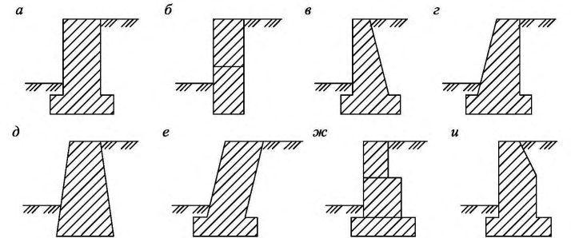
Рисунок 5.1 - Массивные подпорные стены б) уголковые и аналогичные подпорные сооружения (далее - уголковые подпорные сооружения) -удерживают грунт, сопротивляясь сдвигу и опрокидыванию за счет дополнительного пригруза. Устраивают в предварительно разработанных широких траншеях или на поверхности земли на естественном основании или на свайном фундаменте.
Выполняют из железобетона или других материалов, могут устраиваться как консольно, так и с анкерными тягами или контрфорсами. Характерная форма уголковых подпорных стен показана на рисунке 5.2; в) гибкие подпорные сооружения - удерживают грунт, сопротивляясь сдвигу и опрокидыванию за счет заделки и, в некоторых случаях, конструкций крепления (распорок, анкеров и т. п.). Устраивают в предварительно разработанных скважинах, в узких траншеях или без предварительной разработки грунта (например, вдавливанием).
К данному типу относятся подпорные сооружения, устраиваемые способом «стена в грунте» траншейного типа, из буровых свай, грунтоцементных элементов, ограждения из стальных труб или двутавров, шпунтовые ограждения и т. п. Примеры гибких подпорных сооружений приведены на рисунке 5.3.
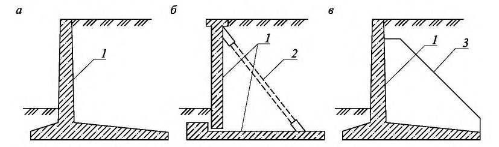
а - консольные; б - с анкерными тягами; в - контрфорсные; 1 - подпорная стена; 2 - тяга; 3 - контрфорс
Рисунок 5.2 - Уголковые подпорные стены
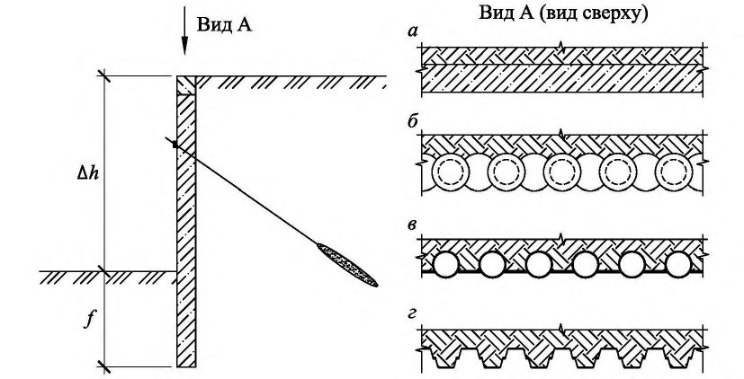
- а - траншейная железобетонная «стена в грунте»; б - ограждение из буросекущихся свай; в - ограждение из металлических труб с забиркой; г - шпунтовое ограждение типа «Ларсен»; Δ h - перепад высот; f - зона заделки
Рисунок 5.3 - Гибкие подпорные стены
- местный опыт устройства подобных сооружений;
- наличие машин, механизмов, квалифицированных подрядных организаций в рассматриваемом регионе;
- геометрию и рельеф площадки строительства, наличие перепадов высот, инженерно-геологические и гидрогеологические условия;
- наличие в зоне влияния существующих сооружений, в т. ч. подлежащих демонтажу;
- наличие опасных геологических процессов;
- специфические особенности региона предполагаемого строительства.
5.2Виды конструкций крепления подпорных сооружений
- при неприемлемых в условиях рассматриваемого объекта деформациях подпорного сооружения и сооружений окружающей застройки;
- недостаточной устойчивости подпорного сооружения или его основания на сдвиг;
- недостаточной устойчивости подпорного сооружения на опрокидывание;
- недостаточной прочности подпорного сооружении и нецелесообразности ее увеличения;
- для арочных (круглых, полукруглых в плане) подпорных сооружений, выполняемых отдельными захватками или элементами в плане -конструктивно, для создания арочного эффекта при погрешностях выполнения арочных участков.
Примечание - Подпорные сооружения, удерживающие перепад высот 5 м и более и устраиваемые в нескальных грунтах, требуют установки конструкций крепления в большинстве случаев.
Примечание - Часто при строительстве применяют несколько видов крепления, например на период строительных работ используют временные конструкции, которые на время эксплуатации сооружения заменяют на постоянные.
- тип подпорного сооружения и срок его службы;
- срок службы крепления (постоянное или временное);
- возможное расположение крепления -внутри или вне контура подпорного сооружения, в т. ч. исходя из наличия в зоне крепления перспективной застройки, существующей застройки, неподлежащей демонтажу или подлежащей демонтажу при наличии у нее подземной части или фундаментов, а также необходимости использования данной зоны во время строительных работ;
- местный опыт устройства подобных сооружений;
- наличие строительных машин, механизмов, квалифицированных подрядных организаций в рассматриваемом регионе;
- геометрию площадки строительства, наличие перепадов высот, грунтовые и гидрогеологические условия;
- наличие опасных геологических процессов;
- специфические особенности региона предполагаемого строительства.
6. Проектирование подпорных сооружений
6.1Общие указания
- выбор типа подпорного сооружения;
- выбор способа устройства подпорного сооружения;
- выбор габаритов, глубины заложения подпорного сооружения, основных геометрических параметров;
- выбор типа конструкций крепления;
- выбор материалов подпорного сооружения и конструкций крепления;
- выбор способа защиты от подземных вод;
- проверку основания подпорного сооружения и конструкций крепления по первой и второй группам предельных состояний (СП 20.13330);
- определение внутренних усилий или напряжений в подпорном сооружении и конструкций крепления, их конструирование;
- выбор монтажных и конструктивных элементов;
- определение последовательности проведения работ;
- проектирование мероприятий, применяемых для снижения влияния строительства на деформации окружающей застройки;
- проектирование мероприятий, применяемых для минимизации изменений гидрогеологических условий;
- назначение необходимых испытаний;
- выбор мероприятий по контролю качества;
- выбор мероприятий по мониторингу.
- проектируемого перепада высот и характера рельефа;
- планируемого срока эксплуатации;
- инженерно-геологических условий;
- наличия подземных вод;
- стесненности строительной площадки и наличия окружающей застройки.
Примечание - Основным способом обеспечения требований надежности грунтовых анкеров и свайных фундаментов подпорных сооружений являются испытания (СП 45.13330, а также 7.3.22).
Проектные решения по устройству подпорных сооружений и удерживающих конструкций должны обеспечивать также безопасность проведения работ и сохранность окружающей застройки и коммуникаций.
Примечание - Расчет по второй группе предельных состояний при отсутствии в зоне влияния подпорных сооружений существующих сооружений допускается выполнять только для конечной стадии строительства. При проектировании подпорных сооружений, строительство которых может оказать негативное влияние на близлежащие здания, необходимо учитывать фактор возможной приостановки строительства, соответственно все промежуточные стадии возведения подземного сооружения необходимо проектировать с учетом расчетов по второй группе предельных состояний. Исключение могут составлять подпорные сооружения геотехнической категории 1.
Примечание - Расчетные значения горизонтальных перемещений гибких подпорных сооружений, при расчете на основное сочетание нагрузок, рекомендуется принимать не более 1/100 от удерживаемого перепада высот и не более 10 см. В случае превышения указанного значения, в расчете следует учитывать возможность образования заколов в зоне призмы активного давления и снижение прочностных характеристик грунта по плоскости сдвига.
Для расчета вертикальных несущих элементов круглых (кольцевых) в плане подпорных сооружений допускается применение осесимметричной задачи. При этом расчет усилий в горизонтальных конструкциях крепления, а также проверку прочности и устойчивости отдельных элементов подпорного сооружения в плане следует выполнять в соответствии с 6.2.18.
Расчеты в пространственной (3D) постановке рекомендуется выполнять в следующих случаях:
- котлован или выработка в грунте имеет малую площадь (ширина выработки менее двух ее глубин) и сложное очертание в плане;
- подпорное сооружение расположено на склоне вдоль направления существенного понижения отметок рельефа;
- склон, на котором расположено подпорное сооружение, имеет существенный уклон в различных направлениях, не совпадающих с осями сооружения.
Примечание - Расчеты плоской задачи в двумерной постановке обычно дают результаты в запас надежности по сравнению с расчетами в пространственной постановке.
- инженерно-геологические условия участка строительства, а в ряде случаев и за пределами участка строительства;
- конструктивные и технологические особенности подпорного сооружения;
- последовательность экскавации и обратной засыпки грунта, монтажа и последующего демонтажа конструкций крепления (при их наличии);
- последовательность возведения основного сооружения, если подпорное сооружение выполняется для его строительства или входит в его состав;
- особенности поведения грунта и конструкций вплоть до достижения рассматриваемого предельного состояния;
- действующие нагрузки и воздействия, их сочетания;
- влияние подпорного сооружения и объектов внешней среды друг на друга;
- возможные геометрические и физические несовершенства.
Расчетную модель следует выбирать с учетом наиболее существенных факторов, определяющих напряженное состояние и деформации как основания, так и подпорного сооружения. Следует учитывать, что значение и распределение давления грунта на подпорное сооружение, значения внутренних сил в конструкциях в значительной степени зависят от жесткости самих конструкций, прочности и жесткости основания, природного напряженно-деформированного состояния основания и последовательности выполнения работ.
- выбирать размеры расчетной области таким образом, чтобы граничные условия не оказывали влияния на результаты расчета;
- использовать, по возможности, условия симметрии;
- проверять, что принятая разбивка области на элементы не влияет существенным образом на результаты расчета;
- применять упруго-пластические модели грунта, отражающие наиболее важные закономерности его механического поведения и использующие характеристики грунтов, определяемые согласно СП 47.13330;
- использовать элементы, позволяющие адекватно моделировать напряжения на контакте «подпорное сооружение-грунт», учитывать такие эффекты, как проскальзывание и отлипание.
- устойчивости положения стены против сдвига, опрокидывания и поворота;
- устойчивости основания под подошвой подпорных стен (для нескальных грунтов);
- прочности скального основания под подошвой подпорных стен;
- несущей способности свай под подошвой подпорных стен;
- несущей способности грунтовых анкеров;
- прочности элементов и узлов соединений подпорных стен и удерживающих конструкций;
- фильтрационной устойчивости основания;
- сохранности сооружений окружающей застройки.
Возможные (но не ограниченные данным перечнем) схемы разрушения подпорных сооружений для предельных состояний первой группы приведены в таблице 6.1.
Таблица 6.1 Предельные состояния первой группы и возможные схемы разрушений
| № п/п | Предельное состояние и характерные причины его наступления | Схема разрушения |
|---|---|---|
| Массивные подпорные сооружения | Массивные подпорные сооружения | Массивные подпорные сооружения |
| 1 | Общий (глубинный) сдвиг: - недостаточная прочность грунта основания для данного типа подпорных сооружений при выбранном перепаде высот; - неверно выбрана глубина заложения подпорного сооружения | |
| 2 | Сдвиг по подошве: - недостаточный вес сооружения; - не выполнена должным образом подготовка основания; - неверно выбраны глубина заложения и ширина подошвы подпорного сооружения | |
| 3 | Смешанный сдвиг (раздел 7 СП 23.13330.2011): - аналогично пунктам 1 и 2 настоящей таблицы | |
| 4 | Опрокидывание: - недостаточная прочность грунта основания для данного типа подпорных сооружений при выбранном перепаде высот; - недостаточный вес подпорного сооружения; - неверно выбрана геометрия подпорного сооружения | |
| 5 | Опрокидывание, связанное с разрушением конструкции: - недостаточная прочность конструкции (армирование выбрано неверно) |
- 6 Потеря несущей способности свайного фундамента по грунту или по материалу свай:
- недостаточная несущая способность свай при действии осевых вдавливающих или выдергивающих, либо поперечных нагрузок
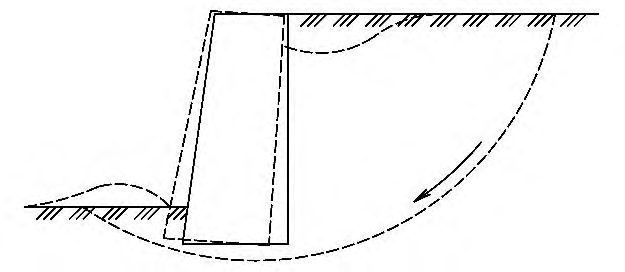
Уголковые подпорные сооружения
- 7 Общий (глубинный) сдвиг:
- недостаточная прочность грунта основания для данного типа подпорных сооружений при выбранном перепаде высот;
- неверно выбрана геометрия подпорного сооружения;
- неверно выбрана глубина заложения подпорного сооружения
- 8 Сдвиг по подошве:
- неверно выбрана ширина подошвы подпорного сооружения;
- неверно выбрана глубина заложения подпорного сооружения;
- недостаточный вес пригруза;
- не выполнена должным образом подготовка основания
- 9 Смешанный сдвиг (раздел 7 СП 23.13330.2011):
- аналогично пунктам 7 и 8 настоящей таблицы
- 10 Опрокидывание:
- аналогично п. 7 и п. 8 настоящей таблицы
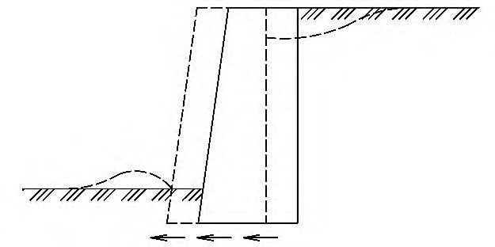
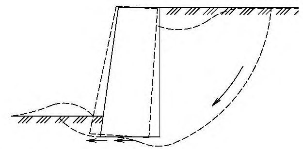
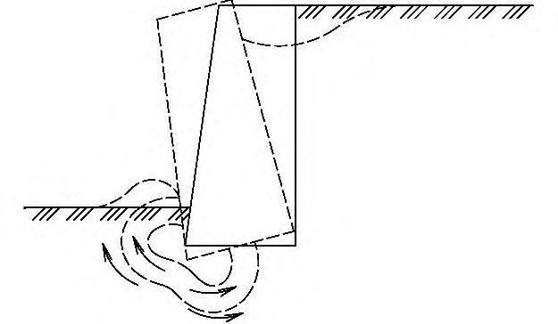
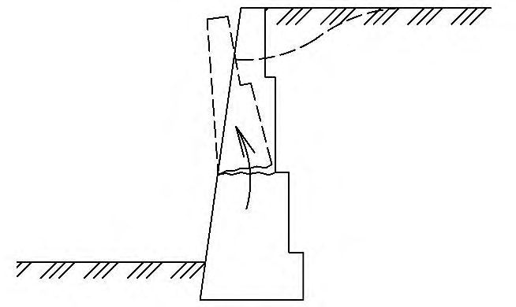
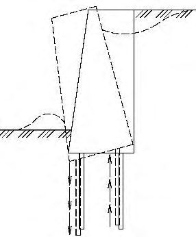
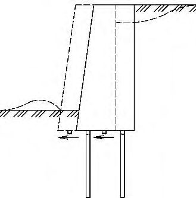
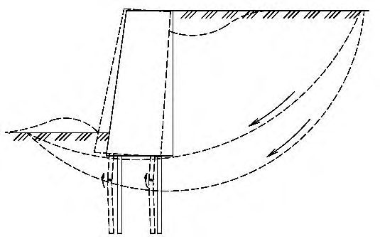
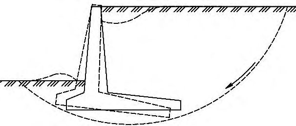
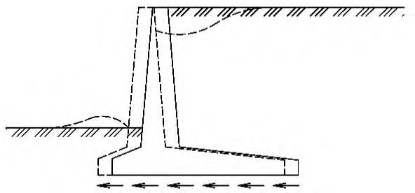
| 11 | Опрокидывание, связанное с разрушением конструкции: - недостаточная прочность конструкции (армирование или толщина подпорной конструкции выбраны неверно); - конструирование узла стыковки арматурных стержней выполнено неверно | а б |
|---|---|---|
| 12 | Потеря несущей способности свайного фундамента по грунту или по материалу свай: - аналогично пунктам 7 и 8 настоящей таблицы | а б |
| Гибкие подпорные сооружения | Гибкие подпорные сооружения | Гибкие подпорные сооружения |
| 13 | Общий (глубинный) сдвиг для консольного подпорного сооружения: - недостаточная глубина заделки подпорного сооружения | |
| 14 | Общий (глубинный) сдвиг для подпорного сооружения с распорным креплением: - недостаточная глубина заделки подпорного сооружения; - неверно выбрана отметка установки распорной конструкции; - недостаточная жесткость или прочность распорной конструкции | а б |
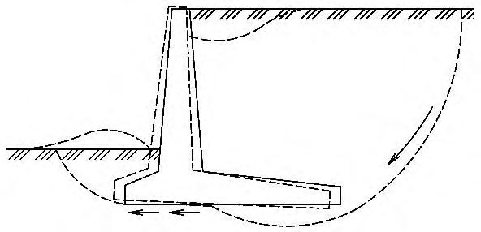
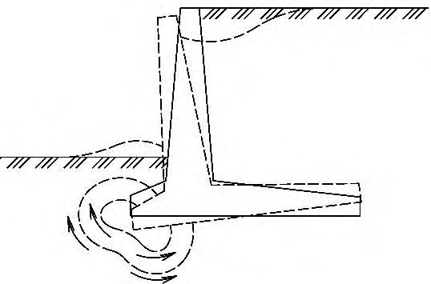
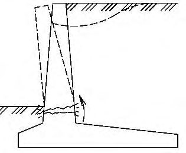
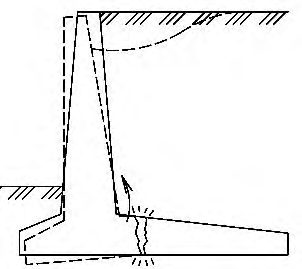
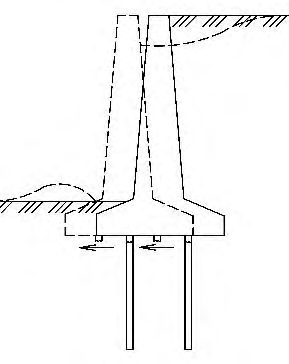
| 15 | Общий (глубинный) сдвиг для подпорного сооружения с креплением грунтовыми анкерами: - недостаточная глубина заделки подпорного сооружения; - неверно выбрана длина тяги грунтовых анкеров; - недостаточная несущая способность |
|---|---|
| 16 | Общий (глубинный) сдвиг для подпорного сооружения с анкерными конструкциями: - недостаточная глубина заделки подпорного сооружения; - неверно выбрано расположение или глубина заделки анкерной конструкции; - недостаточная прочность анкерной конструкции или тяги |
| 17 | Опрокидывание для консольного подпорного сооружения: - недостаточная глубина заделки подпорного сооружения; - недостаточная прочность конструкции |
| 18 | Опрокидывание при разрушении конструктивных элементов для подпорного сооружения с грунтовыми анкерами: - неверно выбрана отметка установки грунтовых анкеров; - недостаточная несущая способность анкеров по грунту; - недостаточная прочность грунтовых анкеров по материалу; - неверно выбрана длина тяги грунтовых анкеров; - недостаточная прочность какого-либо элемента или узла подпорного сооружения на срез, изгиб, продавливание; |
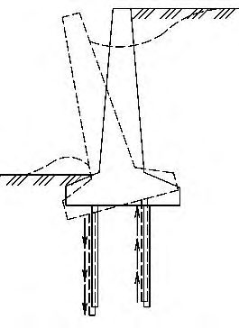
- 20 Опрокидывание при разрушении конструктивных элементов для подпорного сооружения с анкерными конструкциями:
- неверно выбрана отметка установки тяги анкера;
- неверно выбрано расположение, глубина заделки, жесткость или прочность анкерной конструкции;
- недостаточная прочность анкерной конструкции или тяги;
- недостаточная прочность подпорного сооружения на срез, изгиб, продавливание в точке крепления тяги анкера
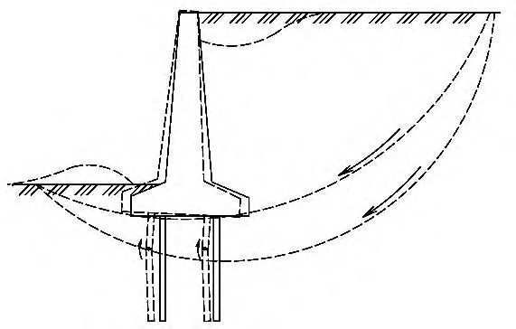
Для подпорных сооружений с анкерными конструкциями справедливы схемы разрушения, указанные в п. 19 а , б , в настоящей таблицы, а также: а
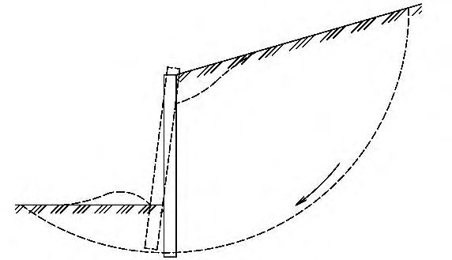
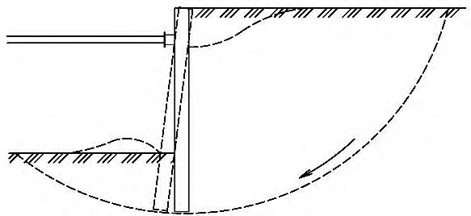
- 23 Предельные состояния, связанные с повреждением конструкций сооружений окружающей застройки:
- недостаточная жесткость подпорного сооружения или конструкций крепления
- деформации подпорного сооружения и его основания не превышают предельных допустимых значений;
- деформации существующей застройки, вызванные устройством подпорного сооружения и последующего строительства, не превышают предельные дополнительные значения;
- ширина раскрытия трещин в железобетонных элементах не превышает предельных допустимых значений.
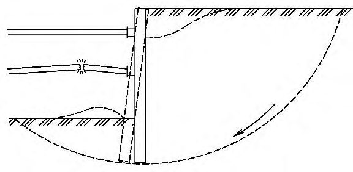
соответствии с СП 28.13330, учитывая нормативный срок службы проектируемого объекта в целом.
При оценке долговечности материалов конструкций, расположенных ниже планировочных отметок, следует учитывать возможность наличия агрессивных веществ в подземных водах и грунте, электрохимической коррозии, влияния грибков и аэробных бактерий в присутствии кислорода, влияния сезонных температурных воздействий и пр.
В аналитических моделях kst для выбранной поверхности скольжения следует определять как отношение удерживающих и сдвигающих сил либо как отношение сдвиговой прочности грунта к касательным напряжениям, действующим на этой поверхности скольжения. В численных расчетах значение коэффициента устойчивости kst допускается принимать равным числу, на которое следует разделить исходные расчетные значения прочностных показателей грунта tgφI и с I, чтобы часть грунтового массива, примыкающего к подпорному сооружению, перешла в состояние предельного равновесия. При этом удельный вес грунта и внешние нагрузки принимаются с коэффициентом надежности по нагрузке γ f = 1,0.
6.2Нагрузки и воздействия
- а) постоянные нагрузки и воздействия:
- вес подпорного сооружения;
- вес грунта засыпки;
- вес конструкций, зданий и сооружений, находящихся в зоне их воздействия на подпорное сооружение;
- вес конструкций, зданий и сооружений, опирающихся на проектируемое подпорное сооружение в долговременных ситуациях (например, несущие подпорные сооружения в период их эксплуатации);
- давление грунта и напряжения в основании в долговременных ситуациях;
- давление подземных вод при установившемся режиме;
- усилия предварительного напряжения в постоянных конструкциях и пр. б) временные длительные нагрузки и воздействия:
- вес стационарного оборудования, находящегося в зоне его воздействия на подпорное сооружение;
- давление грунта и напряжения в основании в кратковременных ситуациях;
- давление подземных вод при неустановившемся режиме, избыточное поровое давление;
- динамические воздействия от оборудования и транспорта;
- нагрузки от складируемых на поверхности грунта материалов;
- температурные воздействия в период эксплуатации;
- усилия во временных анкерах и распорных конструкциях;
- нагрузки, обусловленные изменением влажности, усадкой и ползучестью материалов;
- силы морозного пучения грунта;
- деформации основания, вызванные экскавацией грунта;
- деформации основания, вызванные ухудшением свойств грунта и не сопровождающиеся коренным изменением структуры грунта;
- отрицательное трение и пр.
- в) кратковременные нагрузки и воздействия:
- дополнительное давление, вызванное транспортными нагрузками на земной поверхности;
- давление растворов при цементации;
- температурно-климатические воздействия в период строительства и пр.
- нагрузки, возникающие при изготовлении, транспортировании и монтаже в проектное положение элементов подпорных сооружений заводского изготовления.
- г) особые нагрузки и воздействия:
- воздействия, обусловленные опасными инженерно-геологическими процессами;
- сейсмические воздействия;
- воздействия, обусловленные деформациями основания и сопровождающиеся коренным изменением структуры грунта, например, при просадках и набухании грунтов;
- взрывные воздействия;
- аварийные нагрузки и воздействия и пр.
Примечание - В зависимости от рассматриваемого предельного состояния, а также проектной ситуации (долговременной или кратковременной) некоторые временные длительные нагрузки могут быть отнесены к кратковременным и наоборот (например, температурное воздействие).
Расчетные значения нагрузок и воздействий Fd следует определять в зависимости от их нормативных значений по формуле
где Fn - нормативное значение данной нагрузки или воздействия; γ f - частный коэффициент надежности по нагрузке.
При одновременном действии нескольких нагрузок следует учитывать коэффициент их сочетания ψ, принимаемый в соответствии с СП 20.13330.
Все расчеты следует выполнять с использованием расчетных значений нагрузок и воздействий для первой и второй группы предельных состояний.
При расчете подпорных сооружений и их оснований по предельным состояниям второй группы коэффициенты надежности по нагрузке во всех случаях следует принимать равными 1,0.
Для нагрузок и воздействий, не указанных в таблице 6.2, коэффициенты надежности по нагрузке следует принимать согласно требованиям СП 20.13330, СП 22.13330, СП 35.13330, СП 43.13330, СП 248.1325800.
Давление грунта на подпорные сооружения следует определять в зависимости от значений перемещений и деформаций, реализуемых в результате совместной работы подпорного сооружения и грунтового массива на каждом этапе разработки грунта. В зависимости от значения и направления перемещений подпорной конструкции, значения бокового давления грунта могут изменяться от активного до пассивного давления (рисунок 6.1).
Значения бокового давления грунта допускается определять как произведение вертикального эффективного напряжения в грунте на коэффициент бокового давления грунта. Значения коэффициентов бокового давления грунта в покое, а также значения активного и пассивного давления следует определять в соответствии с СП 22.13330.
Таблица 6.2 Коэффициенты надежности по нагрузке
| Коэффициент надежности по нагрузке γ f | Коэффициент надежности по нагрузке γ f | ||
|---|---|---|---|
| Нагрузки и воздействия | Ед. изм. | кратковременные ситуации (строительный период) | длительные проектные ситуации (эксплуатация) |
| Постоянные | Постоянные | Постоянные | Постоянные |
| Удельный вес грунта (объемные силы) | кН/м³ | 1,0 | 1,0 |
| Нагрузка от веса насыпей (вес насыпного грунта) | кН/м³ | 1,15 (0,85) | 1,15 (0,85) |
| Вес строительных конструкций подпорного сооружения | кН | 1,1 (0,9) | 1,1 (0,9) |
| Вес конструкций, опирающихся на подпорное сооружение, или зданий и сооружений, передающих нагрузку на подпорное сооружение через грунт | кН | По СП 20.13330 | По СП 20.13330 |
| Горизонтальное давление грунта на линейные подпорные сооружения (нагрузочный эффект) | кПа | 1,0 | 1,0 |
| Горизонтальное давление грунта на круглые в плане подпорные сооружения, обусловленное неоднородностью планового залегания грунтов (нагрузочный эффект) | кПа | 1,25 | 1,25 |
| Давление подземных вод, в т. ч. гидростатическое | кПа | 1,1 (0,9) | 1,1 (0,9) |
| Силы трения по контакту с подпорной конструкцией | кПа | 1,0 (0,65) | 1,0 (0,65) |
| Усилия натяжения постоянных анкеров | кН | 1,0 | 1,0 (0,9) |
| Временные длительные | Временные длительные | Временные длительные | Временные длительные |
| Нагрузки, расположенные на поверхности грунта и на перекрытиях (складирование материалов и т. п.) | кН, кПа | 1,1 | 1,1 |
| Вес стационарного оборудования | кН | - | 1,05 |
| Усилия натяжения временных анкеров | кН | 1,0 | - |
| Температурные воздействия | °С | - | 1,1 |
| Кратковременные | Кратковременные | Кратковременные | Кратковременные |
| Нагрузки от механизмов, погрузочных и транспортных средств на поверхности грунта и распорных дисках перекрытий | кПа, кН | 1,2 | 1,2 |
| Нагрузки от веса людей | кПа | - | 1,4 |
| Температурные воздействия | °С | 1,0 | - |
Примечания
1 При расчете подпорных сооружений на особое сочетание нагрузок, коэффициенты надежности по нагрузке принимаются равными γ f = 1,0.
2 Значения коэффициентов надежности по нагрузке, приведенные в скобках, соответствуют благоприятному влиянию нагрузки или воздействия.
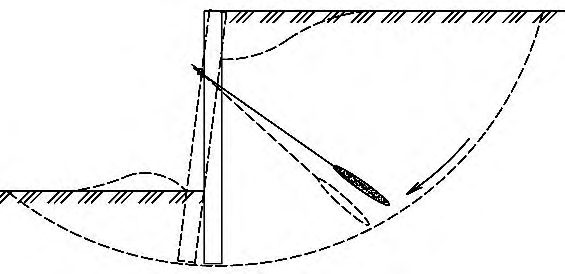
p ´ а - активное давление; p ´ p - пассивное давление; p ´ h - боковое давление грунта; точка p 0 - давление в состоянии покоя
Рисунок 6.1 - Изменение давления грунта на подпорное сооружение в зависимости от его перемещения
При расчете подпорного сооружения по второй группе предельных состояний, а также при расчете на особое сочетание нагрузок следует принимать расчетные значения прочностных характеристик грунта ( II , c II ), определенные с доверительной вероятностью не менее 0,85.
Давление грунта на подпорные сооружения, устраиваемые с обратной засыпкой из привозного песчаного или гравелистого грунта, допускается определять, принимая расчетные значения характеристик грунтов обратной засыпки ( ´ I , ´ I , c ´I), уплотненных до ky = 0,95 их максимальной плотности, в зависимости от характеристик тех же грунтов при максимальной плотности ( I , I , c I ): ´ I = 0,95 I ; ´I = 0,95 I ; c´ I = 0.
Расчетные характеристики грунтов I , I , c I следует принимать:
- для местных грунтов - на основании данных инженерно-геологических изысканий на рассматриваемой площадке;
- для привозных грунтов - на основании лабораторных испытаний образцов привозного грунта, уплотненных до максимальной плотности по ГОСТ 22733.
В дополнение к этому при использовании аналитических методов расчета подпорных сооружений в основаниях, сложенных слабопроницаемыми водонасыщенными грунтами, в которых в процессе строительных работ могут возникать избыточные поровые давления, следует определять значения бокового давления грунта, выраженные в полных напряжениях. При этом в качестве характеристики прочности водонасыщенного грунта следует принимать его прочность при недренированном сдвиге cu (ГОСТ 12248), а значения активного и пассивного давления грунта следует определять в соответствии с СП 22.13330.
Примечание - При использовании численных методов расчета, основанных на моделях сплошной среды, расчет подпорных сооружений, дающий возможность определить только полные напряжения в грунте, не допускается.
Графические методы построения эпюр активного давления, которые допускается применять при использовании аналитических методов расчета, приведены в Е.1 приложения Е. Если угол наклона поверхности грунта превышает угол внутреннего трения, для построения эпюры активного давления допускается использование расчетной схемы Кульмана.
Hw
Методы аналитического построения эпюр гидростатического давления для различных грунтовых условий приведены в Е.2 приложения Е.
- при наличии бокового давления глинистого грунта и отсутствии в зоне глинистого грунта воды;
- при наличии в зоне глинистого грунта бокового давления воды и отсутствии давления глинистого грунта (при этом гидростатическое давление воды следует рассматривать как дополнительную нагрузку на подпорное сооружение, приложенную на всей возможной высоте образования зазора).
где γ сp -понижающий коэффициент условий работы, учитывающий несплошность конструкции; pp - пассивное давление грунта, кПа, определяемое согласно 6.2.12.
При отсутствии дополнительных исследований и при b > 3 d допускается принимать:
где d - поперечный размер элемента ограждения; b - расстояние в осях между элементами ряда ограждения.
В тех случаях, когда для расчета конструкций используются аналитические методы, распределение расчетных величин значений давления грунта на круглые в плане подпорные сооружения следует определять с учетом дополнительного коэффициента надежности по неравномерности нагрузки γ ed fp в соответствии с рисунком 6.2. При этом дополнительное неравномерное давление p г доп допускается вычислять как:
где γ ed fp = 1,25 - коэффициент надежности по неравномерности нагрузки; p г осн - расчетные значения основного давления грунта; α - угловая координата (0° < α < 90°).
Рисунок 6.2 - Схема неравномерного распределения давления грунта на подпорное сооружение круглой формы в плане
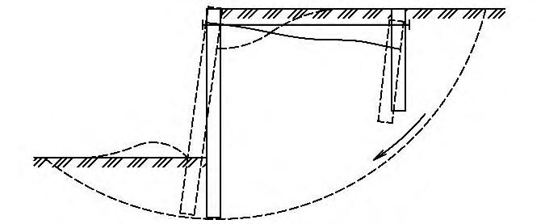
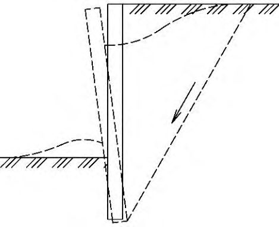
1 - подпорное сооружение; 2 - граница участка; l 1, l 2 - расстояние от края нагрузки до подпорного сооружения и границы участка соответственно.
Рисунок 6.3 - Схема приложения дополнительной нагрузки
Данная нагрузка является осредненной, кратковременной и должна приниматься с коэффициентом надежности по нагрузке γ f = 1,0. Дополнительное горизонтальное давление на подпорное сооружение от такой нагрузки следует принимать в соответствие с 6.2.18-6.2.20.
где γ f = 1,0 - коэффициент надежности по нагрузке;
S c - площадь рассматриваемой поверхности подпорного сооружения, примыкающей к грунту; f р - расчетное значение удельного сопротивления сдвигу по контакту прилегающего грунта, зависящее от эффективных нормальных напряжений на контакте σ´ и принимаемое в соответствии с СП 22.13330 с учетом коэффициента условий работы на контакте «подпорное сооружение-грунтовый массив» γ dk , определяемого в соответствии с приложением Д. σ´ - эффективное нормальное напряжение на контакте «подпорное сооружение-грунтовый массив»; φ - угол внутреннего трения грунта; c - удельное сцепление грунта; γ dk -коэффициент условий работы на контакте «подпорное сооружение-грунтовый массив».
Влияние источников динамических воздействий следует учитывать в пределах зоны, где скорость колебаний поверхности грунта более 15 мм/с (от импульсных источников динамических воздействий) или 2 мм/с (от прочих источников).
Динамические воздействия передают на подпорные сооружения дополнительное давление за счет возникновения в грунте объемных сил инерции, определяемых на основе измерений или численного расчета, а также снижают сопротивление сдвигу на контакте «подпорное сооружениегрунт». Коэффициент условий работы, снижающий усилие сопротивления сдвигу на контакте «подпорное сооружение-грунт» γ dk , следует принимать согласно приложению Д.
Примечания
1 При расчете на особое сочетание нагрузок, вызванное аварийным нарушением работы водонесущих коммуникаций, гидростатическое давление может возникать только в пористых грунтах (пески, супеси, гравийно-галечниковые и городские насыпи и др.) и не может возникать в глинистых грунтах или при отсутствии водоупорного слоя.
2 В случае отсутствия водоупорного слоя при прорыве водонесущей коммуникации воды будут перетекать в нижележащие грунты, в этом случае не следует выполнять учет гидростатического давления на всю высоту слоя грунта ниже потенциального места протечки, а ограничивать ее значением не более 5 м.
3 Расчет подпорных сооружений геотехнической категории 1 на особое сочетание нагрузок в большинстве случаев не требуется.
6.3Проектирование массивных и уголковых подпорных сооружений
- полная ширина фундаментной плиты В ≥ 0,5 Н , где Н - полная высота стенки;
- вынос фундаментной плиты за наружную грань лицевой плиты b = 0,20,3 В ;
- толщина лицевой плиты в месте заделки δ = 0,06-0,08 Н .
Требования к грунтам обратной засыпки, методам и качеству их уплотнения следует принимать в соответствии с СП 45.13330. Схема устройства уголковой подпорной стены с обратной засыпкой приведена на рисунке 6.4, а .
Дополнительное давление грунта следует определять в зависимости от прочностных характеристик грунта насыпи, веса и типа уплотняющей машины или механизма, толщины уплотняемых слоев. Дополнительное давление грунта на подпорные сооружения от уплотняющих машин и механизмов допускается определять в соответствии с приложением Ж.
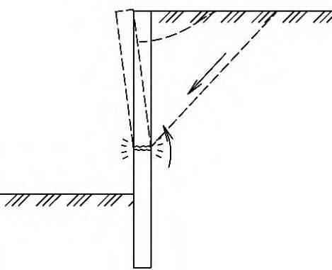
а - поперечное сечение; б - вид спереди (вид А); 1 лицевая стенка; 2 водоотводной кювет; 3 дренажные трубки (шаг ~ 3-6 м); 4 пристенный дренаж; 5 обратная засыпка; 6 подготовка основания «постель»; 7 - «зуб»; 8 - фундаментная плита; 9 - контур траншеи; 10 - контур поверхности земли; i - уклон
Рисунок 6.4 - Рекомендации по конструированию уголковых подпорных стен с обратной засыпкой
В поперечном направлении подошву подпорного сооружения следует принимать горизонтальной или с уклоном в сторону засыпки не более чем 0,125. При необходимости увеличения силы сопротивления сдвигу по подошве, подошву следует проектировать с выступом («зубом»), направленным вниз (рисунок 6.4, а ).
Ряды свай следует размещать смещенными к наружной и внутренней к грунту граням подошвы подпорного сооружения для того, чтобы сваи работали наиболее эффективно. Количество рядов свай и их положение, по возможности, следует выбирать таким образом, чтобы на основное сочетание длительных нагрузок ни одна из свай не работала на выдергивание.
Расстояние между швами в конструкциях подпорных сооружений следует устанавливать расчетом на температурно-климатические воздействия согласно строительным нормам проектирования конструкций из соответствующего материала, а также расчетом по деформациям. Без расчета допускается принимать расстояние между швами не более:
10 м - в монолитных бутобетонных и бетонных подпорных сооружениях без армирования;
15 м - в каменных подпорных сооружениях без армирования;
20 м - в монолитных бетонных подпорных сооружениях при наличии конструктивного армирования;
25 м - в монолитных и сборно-монолитных железобетонных подпорных сооружениях;
30 м - в сборных железобетонных подпорных сооружениях.
Поверхность подпорных сооружений, обращенную в сторону засыпки, следует защищать гидроизоляцией, если иное не указано в техническом задании. Допускается использовать различные типы гидроизоляции (окрасочную, оклеечную и т. п.), удовлетворяющие требованиям СП 71.13330.
При устройстве подпорных сооружений на склонах, для отвода атмосферных вод, за гранью лицевой стены со стороны высоких отметок рельефа должен быть устроен водоотводной кювет (рисунок 6.4, а ).
При короткой задней консоли уголковой стены, когда плоскость призмы обрушения пересекает заднюю грань стены, давление грунта допускается принимать на условную наклонную плоскость, проведенную через точки а и с , если расстояние от верха стены до пересечения с плоскостью обрушения не превышает 0,25 h , где h - высота стены от поверхности грунта до подошвы (рисунок 6.7, а ).
Когда плоскость обрушения пересекает стену ниже 0,25 h (рисунок 6.7, б ), давление грунта следует определять раздельно для вертикального участка ab и наклонной грани призмы обрушения bc .
P 0 , T 0 , M 0 - вертикальная, горизонтальная составляющая нагрузки и момент в голове стены; q - распределенная нагрузка на поверхности грунта; W - собственный вес конструкции в объеме abcd ; Еа , Еq - равнодействующие горизонтальной составляющей активного давления от веса грунта и поверхностной нагрузки q ; Ew - горизонтальная составляющая равнодействующей поровых давлений на стену; Eр - равнодействующая горизонтальной составляющей пассивного давления; TE a , TE p - равнодействующие вертикальной составляющей активного и пассивного давления на гранях стены; TE q -равнодействующая распределенной нагрузки на поверхности; R , TR - равнодействующие вертикальной и горизонтальной составляющих реакции основания под подошвой стены; ε - угол наклона тыловой грани подпорной стены к вертикали; H - высота от верха подпорной стены до уровня срезки; h - полная высота подпорной стены; w - угол наклона поверхности грунта; УПВ - уровень подземных вод; b 1 и b 2 - ширина верхней и нижней грани подпорной стены соответственно
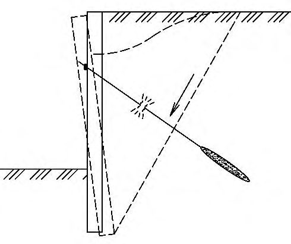
Рисунок 6.5 - Схема нагрузок на массивную подпорную стену
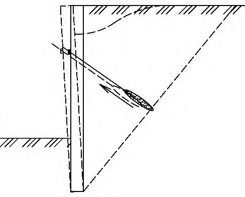
б
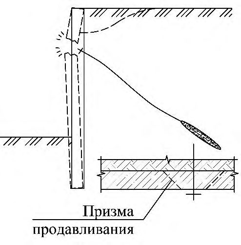
а - массивных стен; б - уголковых стен; Wg 1 - равнодействующая веса грунта в объеме аbcd ; Wg - равнодействующая веса грунта в объеме cde ; γ dk - коэффициент условий работы на контакте; - угол наклона поверхности скольжения к горизонту
Рисунок 6.6 - Расчетные схемы гравитационных подпорных стен
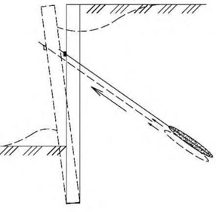
а - при симметричной призме обрушения; б - при короткой консоли и несимметричной призме обрушения; Eq 1, Eq 2 - горизонтальная составляющая давления от поверхностной нагрузки выше и ниже точки b соответственно; Ea 1, Ea 2 - горизонтальная составляющая активного давления выше и ниже точки b соответственно.
Рисунок 6.7 - Схема определения активного давления грунта на угловые подпорные стены
где Fsa - равнодействующая сдвигающих сил, равная сумме проекций всех расчетных значений сдвигающих сил на горизонтальную плоскость (рисунок 6.5):
γ d - коэффициент условий работы, принимаемый:
- для песков, кроме пылеватых, γ d = 1;
- для песков пылеватых, а также пылевато-глинистых грунтов в стабилизированном состоянии γ d = 0,9;
- для пылевато-глинистых грунтов в нестабилизированном состоянии γ d = 0,85;
- для скальных грунтов: невыветрелых и слабовыветрелых γ d = 1; выветрелых γ d = 0,9; сильновыветрелых γ d = 0,8;
- γn - коэффициент надежности по назначению сооружения, принимаемый 1,2; 1,15 и 1,1 соответственно для зданий и сооружений геотехнических категорий 3, 2 и 1 соответственно;
- Fsr - равнодействующая удерживающих сил, равная сумме проекций всех расчетных значений удерживающих сил на горизонтальную плоскость:
здесь TR = R tg(γ dk φ I - β), где R - сумма проекций всех сил на вертикальную ось;
- φ I - расчетное значение угла внутреннего трения грунта по первой группе предельных состояний;
- β - угол наклона поверхности скольжения к горизонту; γ dk - коэффициент условий работы на контакте «подпорное сооружениегрунт», определяемый в соответствии с приложением Д;
Ep - пассивное давление грунта.
Пассивное давление грунта следует учитывать до глубины пересечения вертикальной плоскости, проведенной через переднюю грань подошвы стены, с предполагаемой плоскостью скольжения.
Расчет устойчивости подпорной стены против сдвига должен выполняться как минимум для трех значений угла β: β = 0 - плоский сдвиг; β =0,5φ I и β = φ I - глубинный сдвиг.
- где μ - коэффициент трения подошвы по скальному грунту, принимаемый по результатам испытаний, но не более 0,6 с учетом указаний приложения Д.
где Nu - вертикальная составляющая силы предельного сопротивления основания, определяемая согласно СП 22.13330.
Расчет устойчивости против опрокидывания следует выполнять из условия
где Мsa - сумма моментов всех опрокидывающих сил относительно точки d на рисунке 6.5;
Мsr - сумма моментов всех удерживающих сил относительно той же точки; γ d =1,0 - коэффициент условий работы.
Ширину подошвы подпорных стен на естественном основании рекомендуется выбирать таким образом, чтобы эпюра напряжений под подошвой была трапециевидной. Допускается принимать треугольную эпюру напряжений под подошвой при условии, что площадь сжатой зоны должна составлять не менее 75 % общей площади подошвы фундамента подпорной стены.
6.4Проектирование гибких подпорных сооружений
При использовании численных методов расчетная модель, идеализирующая напряженно-деформированное состояние основания и подпорного сооружения, должна отражать основные свойства прототипа, его конструктивные особенности, характер работы основания и схему их взаимодействия. Численные модели следует верифицировать в соответствии с СП 22.13330 и СП 248.1325800.
Метод Якоби позволяет определить минимально допустимое заглубление гибкой подпорной стены в грунт с одним ярусом крепления. Метод Блюма-Ломейера позволяет получить более низкие значения изгибающих моментов в подпорной конструкции при большем ее заглублении, чем в методе Якоби.
В результате расчета необходимо определить требуемую величину заделки стены в грунт f , величину усилия в элементах крепления (анкерах или распорках) TB , величины внутренних усилий в подпорной конструкции. Методика расчета приведена в И.2 приложения И.
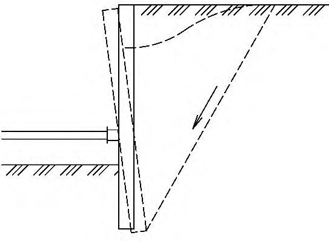
Рисунок 6.8 - Расчетная схема гибкой подпорной стены
В упругой области основание допускается описывать моделью Винклера с коэффициентом постели, растущим линейно с глубиной, и различным для участков подпорной стены, расположенных выше и ниже уровня экскавации.
В пластической области значения предельных давлений грунта на подпорную конструкцию следует ограничивать значениями активного или пассивного давления, определяемыми в соответствии с 6.2.
Контактную задачу о взаимодействия подпорной конструкции и основания следует решать итерационно численным методом (конечных разностей либо конечных элементов).
Контактную задачу плоской деформации рекомендуется сводить к поиску неизвестных значений горизонтальных перемещений y гибкой подпорной конструкции, определяемых в процессе итерационного решения дифференциального уравнения сжато-изогнутой балки на упругом основании. Поскольку давление грунта зависит от искомых величин перемещений подпорной конструкции, для решения задачи следует применять итерационную процедуру, принципиальная расчетная схема которой приведена на рисунке 6.9. Итерационный процесс следует повторять до тех пор, пока не будут выполняться условия сходимости. В качестве условий сходимости допускается принимать отсутствие изменений во внутренних усилиях в каждой точке подпорной конструкции более чем на 5% при сравнении результатов текущей и предыдущей итерации. pa 1, pa 2 - активное давление на 1-й и 2-й итерации соответственно; pp 1, pp 2 - пассивное давление на 1-й и 2-й итерации соответственно
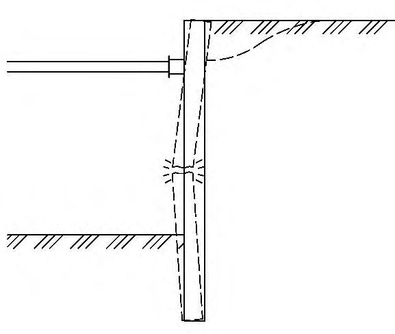
Рисунок 6.9 - Расчетная схема численной контактной итерационной модели гибкого подпорного сооружения
- а) при наличии сопоставимого опыта;
- б) расстоянии l от края захватки до существующего здания, сооружения или коммуникации равного: при В / Н < 2 расстояние l ≥ B /2; при В / Н ≥ 2 расстояние l > H tg(45 о - φI /2), где В - длина захватки (длина одновременно бетонируемого участка);
Н - глубина траншеи;
- φI - расчетное значение угла внутреннего трения грунта (при разных напластованиях принимается средневзвешенное значение φI).
- со стороны грунта при наличии подземных вод - 0,2 мм;
- со стороны грунта при отсутствии подземных вод - 0,3 мм;
- со стороны котлована во всех случаях - 0,3 мм.
7Проектирование конструкций крепления
7.1Общие указания
Гибкие подпорные сооружения высотой более 5 м, устраиваемые в нескальных грунтах, в большинстве случаев требуют закрепления одним или несколькими ярусами постоянных или временных грунтовых анкеров, распорок, тяжей, дисков перекрытий и т. п. Количество ярусов и конструктивные параметры крепления следует определять расчетом в зависимости от высоты подрезки, конструкции подпорного сооружения, условий окружающей застройки, инженерно-геологических и гидрогеологических условий строительной площадки.
7.2Расчет и проектирование распорных конструкций
Примечание - Устройство обвязочных поясов для объединения отдельных элементов подпорного сооружения без распорок, а также применение грунтоцементных элементов и других способов укрепления грунта в зоне заделки, допускается предусматривать и при консольной схеме работы подпорного сооружения.
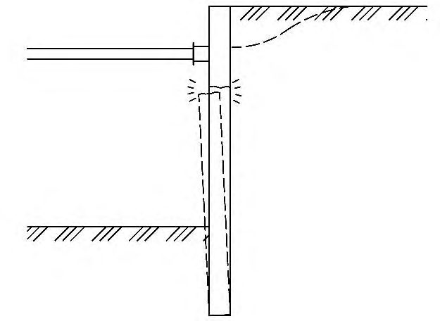
а - горизонтальная распорная система; б - наклонные подкосы; 1 - подпорное сооружение; 2 - распределительный пояс; 3 - распорка; 4 - промежуточная опора; 5 -подкос; 6 - грунтовая берма; 7 - пионерный участок фундаментной плиты
Рисунок 7.1 - Примеры распорных систем
- пространственного положения элементов системы;
- наклона распорных элементов системы;
- конструктивной связи распорок с подпорным сооружением и конструкциями, в которые они упираются;
- температурно-климатических воздействий;
- наличия случайных прогибов и эксцентриситетов;
- срока службы распорной системы;
- последовательности возведения.
В качестве распорных элементов и обвязочных поясов допускается использование решетчатых конструкций различной пространственной ориентации (ферм, расположенных в вертикальной (рисунок 7.6) или горизонтальной плоскости).
Дополнительные напряжения, возникающие в элементах распорных систем от перепада температуры окружающего воздуха, следует вычислять с учетом продольной жесткости распорного элемента, податливости подпорного сооружения и прилегающего грунтового массива. Для определения дополнительных напряжений в элементах распорной системы следует использовать численные методы, отдавая предпочтение программному обеспечению, в котором температурные воздействия возможно задать непосредственно. Допускается использовать специализированное программное обеспечение для расчета подпорных стен, в котором температурные воздействия непосредственно не задаются, в этом случае для определения дополнительных усилий, вызванных температурными воздействиями, следует использовать методику, представленную в приложении К.
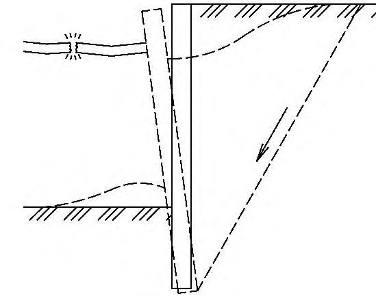
Рисунок 7.2 - Схема устройства распределительного пояса
Допускается устройство котлована комбинированным способом, когда раскрепление постоянными дисками перекрытий предусматривается только по периметру котлована, а разработка грунта центральной части выполняется по классической технологии (рисунок 7.4).
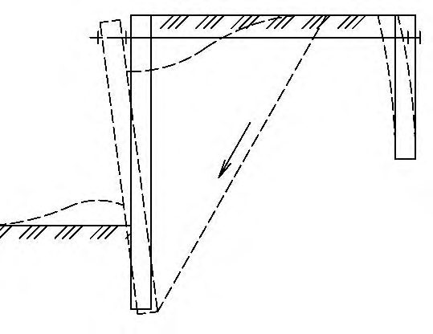
а - план; б - сечение; 1 - подпорное сооружение; 2 - опора перекрытия; 3 -технологический проем; 4 - перекрытие
Рисунок 7.3 - Схема устройства котлована способом «сверху-вниз»
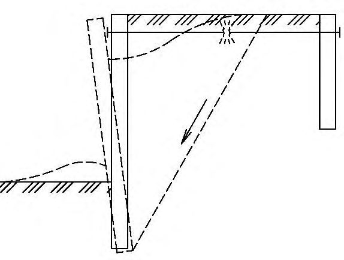
а - план; б - сечение; 1 - подпорное сооружение; 2 - опора перекрытия; 3 -технологический проем; 4 - перекрытие
Рисунок 7.4 - Схема устройства котлована способом «сверху-вниз» по периметру котлована
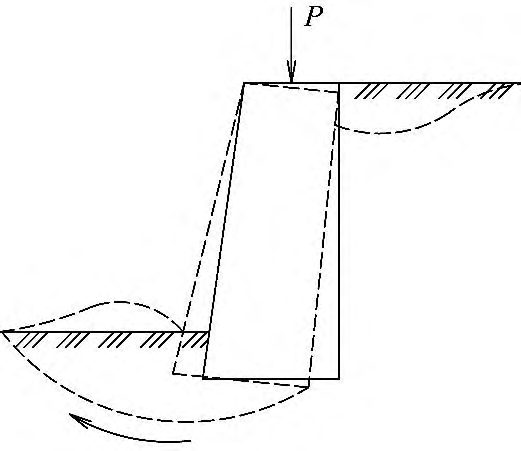
Рисунок 7.5 - Схема установки опоры для перекрытия
1 - обвязочный пояс; 2 - подкос; 3 - раскос; 4 - стойка; 5 - перекрытие (нижний пояс); 6 -перекрытие (верхний пояс); 7 - технологический проем; 8 - отметка разработки; 9 -«стена в грунте»
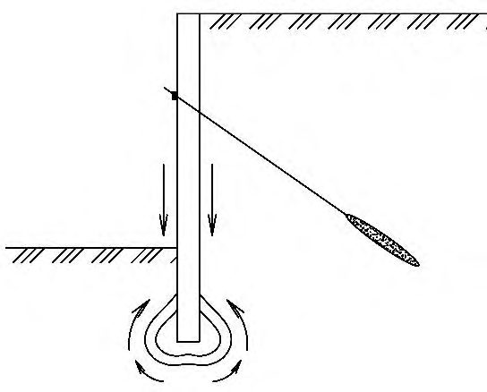
Рисунок 7.6 - Пример устройства распорных перекрытий, работающих по схеме фермы
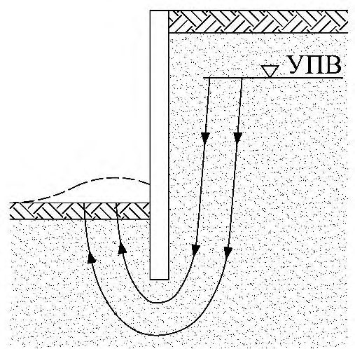
Рисунок 7.7 - Схема устройства грунтоцементного массива в зоне заделки
7.3Проектирование анкерных и разгружающих конструкций
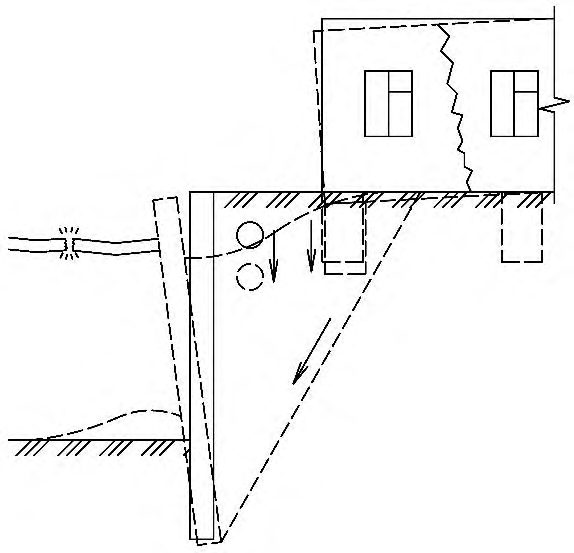
Рисунок 7.8 - Применение грунтовых анкеров для крепления
Постоянные анкеры преимущественно применяются в грунтах, не обладающих реологическими свойствами (скальные, полускальные) в качестве или в составе противооползневых сооружений, а также в прочих случаях, когда устройство иных удерживающих конструкций невозможно или экономически нецелесообразно. Для сооружений с постоянными грунтовыми анкерами, корень которых располагается в грунтах, обладающих реологическими свойствами, необходимо предусматривать систему геотехнического мониторинга на весь период эксплуатации объекта.
В прочих случаях рекомендуется применять временные анкеры. При устройстве котлованов на городских территориях в условиях стесненной застройки временные анкеры рекомендуется проектировать с извлекаемой свободной тягой.
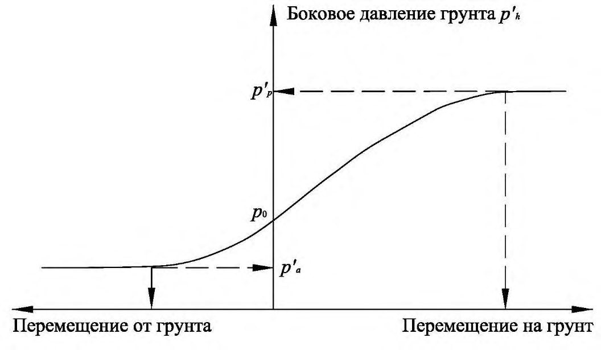
Рисунок 7.9 - Схема грунтового анкера
- на инъекционные - формирование корня таких анкеров проводится путем нагнетания в соответствующую зону цементного раствора под высоким давлением;
- анкеры разрядно-импульсной технологии (РИТ) - формирование корня (или всего тела) таких анкеров выполняется с уплотнением окружающего грунта путем обработки скважины по разрядно-импульсной технологии;
- анкеры с теряемой буровой штангой (микросваи) - формирование таких анкеров выполняется путем забуривания в грунт стального стержня винтового профиля с теряемой буровой коронкой с последующим заполнением тела анкера цементным раствором, подаваемым через сопла буровой коронки; такие анкеры обычно не имеют выраженного корня;
- анкеры с формированием корня по струйной технологии - устройство такого анкера в пределах длины тяги выполняется аналогично анкеру с теряемой буровой штангой, а формирование его корня выполняется путем нагнетания цементного раствора через специальные сопла буровой коронки под высоким давлением; данная технология позволяет увеличить диаметр корня и его предельное сопротивление по грунту.
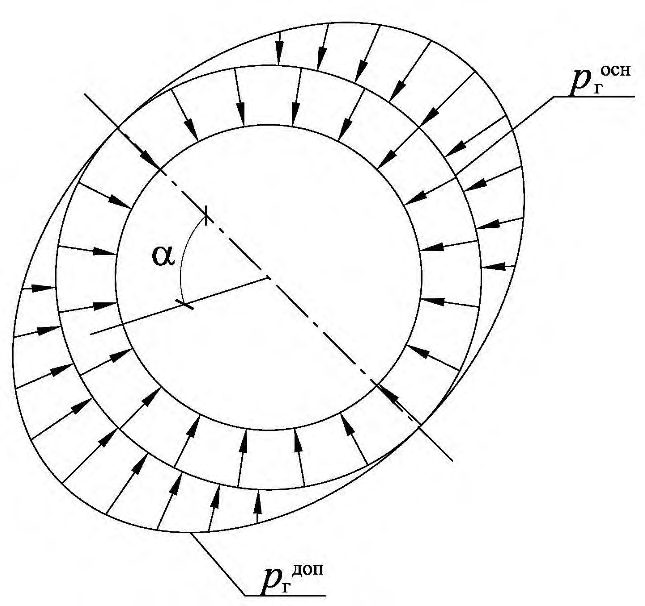
1 - подпорное сооружение; 2 - оголовок анкера; 3 - зона, наиболее подверженная коррозии; l т - тяга анкера; l к - корень анкера (заделка)
Рисунок 7.10 - Схема конструктивных элементов анкера ( а ) и форма его корней в зависимости от способа изготовления: б - инъекционные; в - анкеры РИТ; г -анкеры с теряемой буровой штангой; д - анкеры с теряемой буровой штангой с корнем, выполняемым по струйной технологии
Антикоррозийную защиту постоянных грунтовых анкеров со стальной тягой следует проектировать с учетом агрессивности подземных вод и грунтов. В качестве средств антикоррозионной защиты возможно использование защитной оболочки или увеличение сечения тяги с учетом развития коррозии в зависимости от срока эксплуатации анкера.
- число и отметки расположения ярусов анкеров;
- число анкеров в ярусе и их шаг;
- углы наклона к горизонту и ориентация анкеров в плане;
- свободную длину анкерных тяг, обеспечивающую размещение корня анкера за пределами границы призмы активного давления;
- значения расчетной нагрузки и усилия предварительного напряжения (блокировки) для каждого анкера;
- предварительную длину несущей части анкера (корня анкера, а при его отсутствии - длину анкера), требуемую для восприятия проектных усилий;
- места для устройства опытных анкеров, число пробных испытаний анкеров и порядок их выполнения.
- разрушение оголовка анкера, вызванное его деформацией или коррозией;
- срыв по контакту корня анкера с грунтом;
- выдергивание тяги анкера из материала заделки (корня);
- разрыв тяги анкера;
- потеря общей устойчивости сооружения вместе с анкерами;
- ослабление натяжения анкера за счет больших перемещений головной части, ползучести и релаксации напряжений;
- разрушение конструкций, вызванное анкерными усилиями;
- недопустимые деформации, вызванные взаимодействием групп анкеров с грунтом основания и примыкающими сооружениями.
- особенности возведения подпорного сооружения и последовательность строительных работ;
- ожидаемые ситуации, возникающие в процессе строительства и эксплуатации подпорного сооружения;
- предельные состояния, указанные в 7.3.9, а также их сочетания;
- прогнозируемые уровни подземных вод, а также напоры в нижних горизонтах;
- вероятность того, что грунтовый анкер при испытании покажет недостаточную несущую способность или жесткость;
- выход из строя любого анкера (особая проектная ситуация);
- технологию и порядок устройства анкеров.
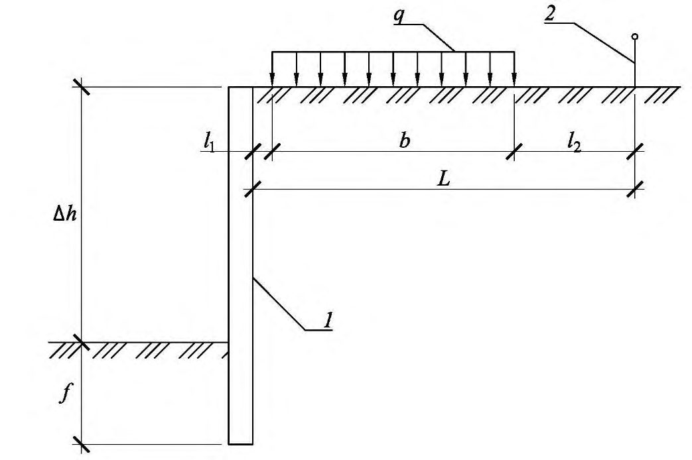
1 подпорное сооружение ;2 - корень анкера; 3 - теоретическая граница призмы активного давления
Рисунок 7.11 - Рекомендуемое расположение корней грунтовых анкеров по отношению к призме активного давления
здесь a - частный коэффициент надежности по сопротивлению по грунту для анкеров, учитывающий возможные неблагоприятные отклонения и условия работы, а также степень ответственности выхода анкера из строя, принимаемый по таблице 7.1.
Таблица 7.1 Коэффициенты надежности для грунтовых анкеров
| Тип анкера | Минимальная величина коэффициента надежности | Минимальная величина коэффициента надежности |
|---|---|---|
| a | a , t | |
| Временные анкеры со сроком службы до двух лет. Разрушение анкера не вызывает опасных последствий для окружающей инфраструктуры и людей | 1,50 | 1,10 |
| Постоянные и временные анкеры с длительным сроком эксплуатации. Разрушение анкера связано со значительным риском для окружающей инфраструктуры и безопасности людей | 1,75 | 1,15 |
| Для расчетов на особое сочетание нагрузок | 1,05 | 1,05 |
где Rt;d - расчетная нагрузка, которая может быть воспринята анкерной тягой (определяется расчетом в соответствии со строительными нормами по проектированию конструкций из соответствующего материала);
- a , t - частный коэффициент надежности по сопротивлению материала тяги анкера, принимаемый в соответствии с таблицей 7.1.
Если тяга анкера подвергается испытаниям на растяжение, то Rt ; d следует назначать по результатам испытаний, при этом допускается принимать в формуле (7.3) a , t = 1,05.
Пробные испытания грунтовых анкеров следует проводить для определения их несущей способности в наиболее характерных инженерногеологических условиях на максимально возможную разрушающую нагрузку, определяемую минимальной из двух величин: предельное сопротивление анкера по грунту без коэффициентов надежности или прочностью материала анкера с коэффициентом надежности 1,05 на разрывное усилие. Для каждого яруса грунтовых анкеров проектом рекомендуется предусматривать не менее трех пробных испытаний при условии нахождения корней одного яруса в одном инженерно-геологическом элементе.
Контрольные испытания грунтовых анкеров следует проводить для проверки правильности принятых в проекте конструкций и технологии устройства анкеров на нагрузку, в 1,5 раза превышающую расчетную нагрузку на анкер. Контрольным испытаниям рекомендуется подвергать 10% от общего числа анкеров (каждый 10-й анкер).
Приемочные испытания грунтовых анкеров проводят в ходе их натяжения для проверки их эксплуатационной пригодности на нагрузку, в 1,25 раза превышающую расчетную нагрузку на анкер. Приемочные испытания следует проводить для всех анкеров кроме тех, на которых были проведены контрольные испытания.
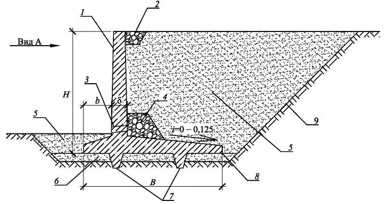
Рисунок 7.12 - Анкерные и разгружающие конструкции
8Конструирование подпорных сооружений и конструкций крепления
8.1Общие указания
- рельефа местности;
- границ участка строительства;
- наличия существующих дорог, сооружений и инженерных коммуникаций;
- возможности размещения строительной техники в процессе устройства конструкций;
- возможности устройства монтажных площадок и площадок складирования;
- направления фильтрационных потоков в грунтовом массиве.
- габаритов примыкающих сооружений, в т. ч. с учетом конструкций их усиления и инженерных коммуникаций;
- возможного влияния на окружающую застройку и инженерные коммуникации;
- технологических особенностей работы и габаритов применяемой строительной техники, технологических зазоров;
- необходимости устройства вспомогательных конструкций (форшахт).
Примечание - За исключением специально обоснованных случаев, расстояние между наиболее выступающей частью строительной машины для устройства гибких подпорных сооружений (например, вращателя или «стола») и наиболее выступающей частью близлежащего существующего сооружения в пределах высоты работы строительной машины (крыши, балкона, карниза, подошвы фундамента) рекомендуется предусматривать не менее 500 мм.
При проектировании постоянных подпорных сооружений необходимо предусматривать их антикоррозийную защиту или другие мероприятия, обеспечивающие безопасную эксплуатацию в течение расчетного срока службы сооружения.
Устройство деформационных и температурно-усадочных швов в постоянных гибких подпорных сооружениях в большинстве случаев не требуется, т. к. швами являются стыки между захватками, сваями и другими элементами подпорного сооружения. Исключения составляют обвязочные или распределительные пояса, а также специально обоснованные случаи, например, транспортные сооружения, работающие на открытом воздухе в условиях значительного перепада температур (раздел 10), подпорные сооружения, возводимые в сейсмически опасных районах, в районах с распространением слабых и структурно-неустойчивых грунтов (раздел 11) и т. п.
8.2Конструктивные требования к подпорным сооружениям, погружаемым забивкой, вдавливанием, вибропогружением, завинчиванием и т. п.
Примечание - Для снижения технологического влияния вместо бурения лидерных скважин рекомендуется применять разрыхление грунта путем завинчивания и вывинчивания шнека без выемки грунта или применение безопасных методов погружения элементов подпорного сооружения (например, метода непрерывного полого шнека (НПШ), бурение под обсадной трубой, под глинистым или глиноцементным раствором).
Применение бывших в употреблении материалов для устройства постоянных подпорных сооружений не допускается.
Извлечение элементов подпорных сооружений из труб, расположенных на расстоянии менее 5 м в свету от зданий, сооружений и инженерных коммуникаций (в т. ч. и строящихся), допускается только при условии разработки технологического регламента по данному виду работ с указанием мероприятий, исключающих возможность сверхнормативных деформаций близко расположенных сооружений. В процессе извлечения труб следует предусматривать непрерывный геотехнический мониторинг за деформациями этих сооружений. а расположение стыков по высоте элементов по периметру сооружения; б - пример стыка металлического элемента; 1 - стыки элементов ; 2 - стальные элементы подпорного сооружения; 3 - ось подпорного сооружения; 4 - стыкуемые элементы; 5 - пластины стыка
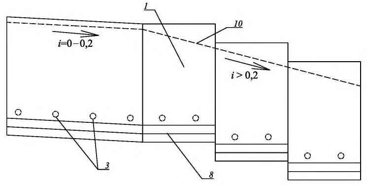
Рисунок 8.1 - Схема стыковки стальных элементов подпорного сооружения
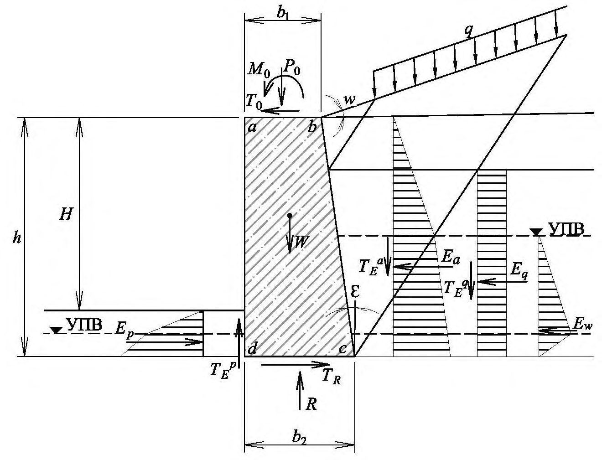
Рисунок 8.2 - Схема устройства забирки
8.3Конструктивные требования к подпорным сооружениям, выполняемым способом «стена в грунте»
Толщина и глубина «стены в грунте» может быть ограничена возможностями применяемых землеройных механизмов. Наиболее часто используемые толщины «стены в грунте» составляют 600-1000 мм. Монолитные железобетонные «стены в грунте» толщиной менее 600 мм допускается применять только при условии разработки технологического регламента на бетонирование с указанием мероприятий, гарантирующих качественную укладку и твердение бетона в конструкции.
Устройство траншей глубиной менее 4 м для возведения «стены в грунте» в большинстве случаев экономически нецелесообразно.
При наличии по трассе проектируемой «стены в грунте» грунтов с кавернами и пустотами, трещиноватых скальных пород, применение тиксотропных растворов допускается только при условии предварительного тампонирования данных пород цементным или глиноцементным раствором по специальному проекту.
При наличии по трассе проектируемой «стены в грунте» рыхлых насыпных грунтов, крупнообломочных включений проектом следует предусмотреть их предварительное извлечение, а при наличии неиспользуемых подземных коммуникаций - их заглушку, или применить другой способ устройства подпорного сооружения, например буровые сваи (подраздел 8.4).
Примечания
1 Траншеи, образовавшиеся после выборки крупнообломочных включений необходимо засыпать глинистым или песчаным грунтом с уплотнением до k у = 0,92 на расстояние не менее чем 2 м в каждую сторону от грани «стены в грунте». Без контролируемого уплотнения допускается использовать цементнопесчаную смесь с содержанием цемента не менее 50 кг на 1 м³ песка.
2 При проектировании подпорного сооружения следует учитывать, что выборка крупнообломочных включений требует дополнительных земляных работ и занимает место на площадке строительства, и, при близком расположении границ участка и существующих сооружений, может потребовать устройства дополнительных временных подпорных сооружений (например, из труб) или уменьшения габаритов проектируемого сооружения.
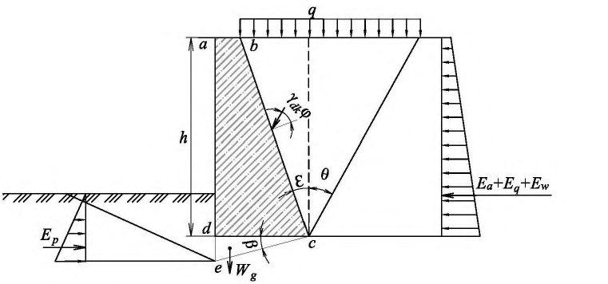
1 деформационный шов; 2 - технологическая дорога; 3 - обратная засыпка
Рисунок 8.3 - Пример поперечного сечения форшахты траншейной «стены в грунте»
Форшахту рекомендуется выполнять из монолитного железобетона класса B10-В15. Армирование форшахты, за исключением особых случаев, выполняется конструктивно.
Примечания
- 1 Конструкцию форшахты на стадии рабочего проектирования следует выбирать по согласованию с подрядной организацией. Высоту форшахты рекомендуется принимать в пределах 0,8-1,0 м, ширину стенки - 0,5 м, внутреннее расстояние между стенками форшахты в свету следует принимать на 50 мм более толщины «стены в грунте».
- 2 Внутренняя грань форшахты должна соответствовать внутренней грани «стены в грунте», а внешняя грань отступать от «стены в грунте» на 50 мм, т. е. отступ следует выполнять не по оси, а наружу от проектируемого сооружения, чтобы не сужать его проектный габарит.
3 Технологические площадки (дороги) для установки тяжелой землеройной техники рекомендуется отделять от форшахты деформационным швом во избежание ее смещений.
4 Высотное положение форшахты должно быть таким, чтобы уровень тиксотропного раствора в ней был выше уровня подземных вод не менее чем на 1,5 м. В случае невыполнения данного условия, а также при наличии слабых грунтов в верхней части разреза, необходимо выполнять подъем форшахты путем устройства дополнительной насыпи.
- обеспечение устойчивости стенок траншеи в пределах захватки с учетом близкорасположенных существующих сооружений (6.4.16);
- объем захватки (возможность размещения на площадке бентонитового завода требуемой производительности с учетом аварийного запаса тиксотропного раствора, а также возможность непрерывного бетонирования захватки до начала твердения бетонной смеси);
- зависимость геометрии захватки от применяемого рабочего органа торцы захватки могут быть полукруглыми (для круглого грейфера) или прямыми (для плоского грейфера или фрезы);
- влияние размера захватки на контур сооружения в плане (после выполнения разбивки на захватки, контур подпорного сооружения может отклоняться от изначально запланированного - геометрия захваток может привести к выходу отдельных участков подпорного сооружения за пределы планируемого архитектурного контура (на угловых и круговых участках); данный фактор особенно важен при проектировании подпорных сооружений на минимальном расстоянии от границ участка или от существующих сооружений; «лишние» элементы «стены в грунте» следует располагать внутри контура сооружения без их армирования с последующей срубкой в процессе экскавации грунта; в случае необходимости следует уменьшать архитектурный контур проектируемого сооружения). а - полукруглый грейфер; б - плоский грейфер или гидрофреза; в - угловая захватка; 1 арматурный каркас; 2 - ограничитель захваток полукруглого типа; 3 - ограничитель захваток с гидрошпонкой; 4 - проектный контур «стены в грунте»; 5 - демонтируемый участок
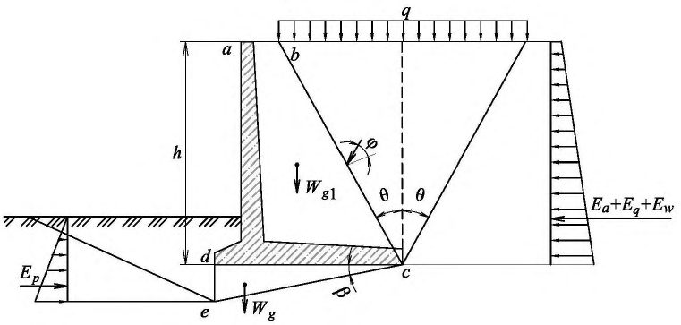
Рисунок 8.4 - Схема разбивки на захватки
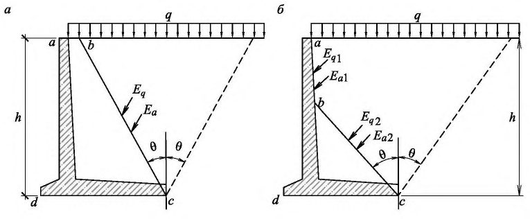
Рисунок 8.5 - Схема устройства «стены в грунте» из различных материалов
Примечание - При экскавации грунта внутри подпорного сооружения ниже уровня грунтовых вод в ППР на выполнение земляных работ необходимо предусматривать мероприятия, исключающие возможность возникновения аварийных ситуаций и негативное влияние на окружающие сооружения в случае обнаружения сквозных водопроницаемых дефектов в подпорном сооружении в процессе экскавации грунта.
- толщина арматурного каркаса по наиболее выступающим деталям должна быть не менее чем на 50 мм меньше ширины траншеи;
- геометрические размеры и вес каркаса должен учитывать возможность его подъема и монтажа в проектное положение (арматурные каркасы
СП 381.1325800.2018 шириной более 3 м, длинной более 20 м рекомендуется выполнять из нескольких составных частей, стыкуемых в процессе погружения, а при необходимости устройства единого каркаса следует разработать специальный регламент на подъем и монтаж каркаса в траншею с учетом его габаритов, веса и применяемых грузоподъемных механизмов);
- конструкция арматурного каркаса должна обеспечивать возможность свободного прохода бетонолитных труб для бетонирования захватки;
- расстояние между арматурными каркасами в одной захватке рекомендуется предусматривать не менее 250 мм, а расстояние между каркасом и ограничителем захватки - не менее 150 мм, максимально возможное расстояние между каркасами должно устанавливаться проектом;
- арматурный каркас следует вывешивать на форшахте, для чего проектом следует предусматривать зазор между нижним торцом каркаса и низом разработанной траншеи не менее 100 мм.
- стержни рабочей арматуры в местах перехлеста необходимо соединять монтажной сваркой с длиной шва не менее восьми диаметров наименьшего из стыкуемых стержней, но не менее 150 мм;
- стыки арматурных стержней не следует располагать в зонах с максимальными изгибающими моментами.
1 продольное армирование; 2 - поперечное армирование; 3 - граница траншеи «стены в грунте»; 4 - закладная деталь
Рисунок 8.6 - Схема размещения закладной детали «стены в грунте»
- среднегодовая - 0,5 л на 1 м² поверхности в сутки;
- средненедельная - 1,0 л на 1 м² поверхности в сутки;
- для любого участка поверхности «стены в грунте» площадью 10 м² , представляющего собой произвольно выбранный прямоугольник с соотношением сторон от 0,4 до 2,5, средненедельная норма фильтрации не должна превышать 2,0 л на 1 м² поверхности в сутки.
- разбивку на захватки следует выполнять с устройством гидрошпонок или применять подрезку соседних захваток фрезой (допускается применять и другие методы повышения водонепроницаемости стыков, например устройство грунтоцементных элементов на стыках захваток за «стеной в грунте»);
- внутреннюю поверхность «стены в грунте» в отметках экскавации следует обрабатывать гидроизоляционными составами проникающего действия;
- по внутреннему периметру «стены в грунте» следует предусматривать водосборные канавки для возможных незначительных протечек грунтовых вод и отвода их в приямки для последующей откачки.
8.4Конструктивные требования к подпорным сооружениям, выполняемым из буровых свай
Примечания
1 При проектировании следует учитывать, что устройство скважин под обсадными трубами глубиной более 40 м может быть затруднительно из-за ограничения прочности стыков обсадных труб (данную возможность следует уточнять по паспорту производителя обсадных труб).
2 При наличии в пределах проектируемой скважины трещиноватых скальных пород крупнообломочных включений, инженерных коммуникаций, рыхлых насыпных грунтов и т. п., применение тиксотропных растворов допускается только при условии предварительного тампонирования данных пород цементным или глиноцементным раствором по специальному проекту.
Примечания
1 Конструкцию форшахты на стадии рабочего проектирования следует выбирать по согласованию с подрядной организацией. Высоту форшахты рекомендуется принимать в пределах 0,8-1,0 м, ширину стенки - 0,5 м, внутреннее расстояние между стенками форшахты в свету следует принимать на 50 мм более диаметра скважины.
2 Внутренняя грань форшахты должна соответствовать внутренней грани свай подпорного сооружения, а внешняя грань отступать от свай на 50 мм, т. е. отступ рекомендуется выполнять не по оси, а наружу от проектируемого сооружения, чтобы не сужать его проектный габарит.
3 Технологические площадки (дороги) для установки тяжелой землеройной техники рекомендуется отделять от форшахты деформационным швом во избежание ее смещений.
1 деформационный шов; 2 - технологическая дорога
Рисунок 8.7 - Пример конструкции форшахты подпорного сооружения из буросекущихся свай
Примечание - При экскавации грунта внутри подпорного сооружения ниже уровня грунтовых вод в ППР на выполнение земляных работ необходимо предусматривать мероприятия, исключающие возможность возникновения аварийных ситуаций и негативное влияние на окружающие сооружения в случае обнаружения сквозных водопроницаемых дефектов в подпорном сооружении в процессе экскавации грунта.
При необходимости, во избежание всплытия арматурных каркасов при укладывании бетонной смеси, а также во всех случаях армирования не на полную глубину скважины, каркас необходимо закрепить в проектном положении.
Примечание - При бурении скважин в обсадных трубах закрепление каркаса внутри трубы невозможно, в этом случае допускается придерживать каркас инструментом буровой машины или искусственно его утяжелять.
- 0,5 % - при d < 1000 мм;
- 0,4 % - при 1000 ≤ d < 1500 мм;
- 0,35 % - при d ≥ 1500 мм.
Устройство постоянных подпорных сооружений из буросекущихся свай, выполняющих функцию защиты от подземных вод без устройства отдельного гидроизоляционного ковра, в большинстве случаев экономически нецелесообразно.
8.5Конструктивные требования к подпорным сооружениям, выполняемым с применением струйной технологии
Примечание - Грунтоцементные элементы изготавливаются по однокомпонентной или двухкомпонентной технологии. Однокомпонентная технология заключается в формировании грунтоцементной колонны под напором цементного раствора. Двухкомпонентная технология заключается в формировании грунтоцементной колонны под напором цементного раствора в воздушной оболочке. В ряде случаев, для грунтоцементных колонн особо большого диаметра, применяется трехкомпонентная технология, которая заключается в формировании грунтоцементной колонны под напором цементного раствора в воздушной оболочке с дополнительным размывом грунта водяной струей.
Подпорные сооружения, выполняющие функцию защиты от подземных вод, устраиваемые из грунтоцементных элементов по двухили трехкомпонентной технологии, допускается предусматривать в один ряд при условии обязательного контроля ее сплошности геофизическими методами.
где D - диаметр грунтоцементных элементов; δ = 3 % - возможное отклонение от вертикали;
H - максимальная глубина бурения.
При отсутствии специального обоснования отношение шага к диаметру грунтоцементных колонн следует принимать I/D = 0,5-0,7.
Таблица 8.1 Диаметр грунтоцементных элементов
| Расчетный диаметр грунтоцементного элемента, мм | Расчетный диаметр грунтоцементного элемента, мм | |
|---|---|---|
| Тип грунта | Однокомпонентная технология | Двухкомпонентная технология |
| Глинистые грунты | 500-600 | 1000-1300 |
| Песчаные грунты | 600-800 | 1300-2000 |
Предварительно прочность на сжатие и модуль деформации грунтоцементных элементов допускается принимать по таблице 8.2.
Таблица 8.2 Прочность и модуль деформации грунтоцементных элементов
| Тип грунта | Прочность грунтоцементных элементов на сжатие, МПа | Модуль деформации грунтоцементных элементов, МПа |
|---|---|---|
| Глинистые грунты | 0,5-2,0 | 50-500 |
| Песчаные грунты | 3,0-10,0 | 500-5000 |
Примечания
1 Погружение армирующих элементов на глубину более 12 м следует предусматривать с применением вибропогружателя и вдавливающих механизмов.
2 Диаметр бурового инструмента для устройства грунтоцементных колонн обычно не превышает 114 мм, в связи с этим, при необходимости погружения армирующих элементов большего размера сквозь толщу насыпных и крупнообломочных грунтов, в проекте необходимо предусматривать устройство лидерных скважин соответствующего диаметра.
3 При проектировании армирующих элементов, погружаемых на глубину более 20 м, следует предусматривать выполнение опытных работ или разработать технологический регламент погружения для конкретного объекта.
8.6Требования к конструкциям крепления
1 - грунтовая берма; 2 - подпорное сооружение; α - угол откоса бермы (определяется по расчету)
Рисунок 8.8 - Схема устройства грунтовой бермы
Применение бывших в употреблении материалов для устройства постоянных распорных конструкций не допускается.
Рисунок 8.9 - Схема устройства распорных элементов
1 - подпорное сооружение; 2 - устье анкера; 3 - анкерная тяга
Рисунок 8.10 - Схема устройства грунтовых анкеров выше уровня подземных вод
(рисунок 8.12). Для получения более близких результатов испытаний к фактической несущей способности анкера, при его устройстве, расчетную свободную длину следует изолировать от грунтового массива, например, устройством пластиковых оболочек, снижающих трение (рисунок 8.11). Также следует исключить возможность натяжения испытательных анкеров на цементную оболочку, окружающую тягу анкера в пределах свободной длины (рисунок 8.12).
1 - пластиковая оболочка; 2 - стыковая муфта; 3 - винтовая штанга; 4 - свободная длина; 5 - корень анкера
Рисунок 8.11 - Винтовая штанга
а - при неправильном проведении испытаний (испытательная нагрузка: Pd и = R цт+ R об+ R к не соответствует фактическому предельному сопротивлению анкера: Pd ф = R к); б - при правильном проведении испытаний (испытательная нагрузка Pd и соответствует фактическому предельному сопротивлению анкера Pd ф ); 1 - подпорное сооружение; 2 -корень анкера; 3 - призма активного давления на этапе испытаний; 4 - призма активного давления на этапе окончания экскавации; 5 - отметка испытаний; 6 - окончательная отметка экскавации; 7 - отверстия в закладной детали; 8 - пластиковая оболочка; Pd и -допустимая расчетная нагрузка на анкер при неправильном проведении испытаний; Pd ф -допустимая расчетная нагрузка на анкер при правильном проведении испытаний; R цт сопротивление анкера, обусловленное опиранием цементного тела на подпорное сооружение; R об - сопротивление свободной длины анкера; R к - фактическое сопротивление анкера, передаваемое по грунту
Рисунок 8.12 - Схема реализации предельного сопротивления анкера
8.7Допустимые отклонения подпорных сооружений и удерживающих конструкций
Нормативные отклонения подпорных сооружений, устраиваемых в грунте по 5.1.3, перечисления б)-г), следует принимать по таблицам 8.3, 8.4. Примечание - Приведенные в таблицах отклонения следует суммировать.
Таблица 8.3 Нормативные отклонения подпорных сооружений, погружаемых забивкой, вдавливанием, вибропогружением, завинчиванием, бурением
| Показатель | Значение допуска |
|---|---|
| Расположение элементов подпорного сооружения в плане: а) перпендикулярно оси подпорного сооружения б) вдоль оси подпорного сооружения | ±10 см ±20 см |
| Среднее отклонение от вертикали (измеряется от верха до проектной отметки экскавации грунта): а) временных подпорных сооружений б) постоянных подпорных сооружений | Не более1% Не более1% |
| Глубина элементов подпорного сооружения: а) отклонения верха от проектной отметки | ±20 см |
| б) отклонения низа от проектной отметки | +20 см |
Требования к отклонению элементов постоянной распорной системы от проектного положения следует принимать согласно строительным нормам проектирования конструкций из соответствующего материала.
Таблица 8.4 Нормативные отклонения подпорных сооружений, выполняемых способом «стена в грунте», из буровых свай или из грунтоцементных элементов
| Показатель | Значение допуска |
|---|---|
| Смещение осей подпорного сооружения в плане: | ±3 см |
| Среднее отклонение от вертикали (измеряется от верха до проектной отметки экскавации грунта): а) временных подпорных сооружений | Не более 0,5% |
| Толщина подпорного сооружения: а) средняя толщина | +10 см |
| б) отдельные участки (наплывы) | +15 см |
| Глубина элементов подпорного сооружения: а) отклонения верха от проектной отметки | ±10 см |
| б) отклонения низа от проектной отметки | +20 см |
Таблица 8.5 Нормативные отклонения при устройстве грунтовых анкеров
| Показатель | Значение допуска |
|---|---|
| Параметры анкеров (длина тяги, длина корня) | ± 10 см |
| Точность установки на точку приложения бура | По согласованию с проектной организацией |
| Положение оси скважины | ± 5° |
| Диаметр скважины | + 5 см |
| Глубина скважины | + 20 см |
9Особенности проектирования стен подвалов
9.1Общие указания
- стены подвалов, выполняемые в предварительно разработанных выемках, с последующей обратной засыпкой (рисунок 9.1, а );
- стены подвалов, выполняемые поверх временного или постоянного ограждения котлована (рисунок 9.1, б );
- постоянные ограждения котлованов, являющиеся стеной подвала и удерживающие перепад грунта в период строительства и эксплуатации объекта (рисунок 9.1, в ). а - стена подвала в предварительно разработанной выемке; б - стена подвала поверх ограждения котлована (временного или постоянного); в - постоянное ограждение котлована, являющееся стеной подвала; 1 - обратная засыпка; 2 - строящееся здание; 3 - стена подвала; 4 - подпорное сооружение; 5 - перекрытие строящегося здания
Рисунок 9.1 - Типы стен подвалов
9.2Стены подвалов
1 - стена подвала; 2 - обратная засыпка; 3 - плита пола подвала; pq - давление от нагрузки на поверхности; p γ - давление от веса грунта
Рисунок 9.2 - Расчетная схема стены подвала
При наличии в зоне, оказывающей влияние на стену подвала, автомобильных или железных дорог, расчет горизонтального давления следует выполнять с учетом требований раздела 10 настоящего свода правил.
- для стен подвалов, подвергающихся попеременному воздействию положительных и отрицательных температур - аналогично массивным и уголковым подпорным стенам (6.3.11);
- для стен подвалов, не подвергающихся попеременному воздействию положительных и отрицательных температур, расстояние между деформационными и температурно-усадочными швами определяется расчетом; без расчета допускается принимать расстояние между температурно-усадочными швами не более 60 м для монолитных и 120 м для сборных и сборно-монолитных конструкций подвалов.
9.3Ограждения котлованов
- для стадии строительства - согласно 6.4;
- для стадии эксплуатации - согласно 9.2 с введением дополнительных связей (опор) в уровнях перекрытий и пола (фундаментной плиты) подвала.
Расчет стены подвала следует выполнять согласно 9.2.
Допускается распределение внутренних усилий между конструкциями пропорционально их жесткостям с учетом 9.3.5.
Примечание - Следует учитывать, что с увеличением пролета (вертикального расстояния между опорами стены подвала, например, между плитами перекрытий), увеличивается доля нагрузки, приходящаяся на стену подвала и уменьшается доля нагрузки, приходящаяся на ограждение котлована за счет увеличения его деформаций. а - водопроницаемое ограждение; б - водонепроницаемое ограждение; 1 - стена подвала; 2 - подпорное сооружение; 3 - упругие связи; q γ - эпюра горизонтального давления от веса грунта и нагрузок на поверхности; qw - эпюра гидростатического давления воды
Рисунок 9.3 - Схема распределения давления между ограждением котлована и стеной подвала
10Особенности проектирования подпорных стен транспортных сооружений
Гибкие подпорные стены транспортных сооружений, выполняемые способом «стена в грунте», а также из касательных или секущихся свай, не требуют устройства деформационных швов (швами являются стыки между захватками или элементами подпорного сооружения). Исключение могут составлять случаи, обусловленные технологическими особенностями транспортного сооружения (например, требованиями по защите от протечек подземных вод).
11Особенности проектирования подпорных сооружений в специфических условиях
11.1Особенности проектирования подпорных сооружений в сейсмических районах
Необходимость расчета подпорного сооружения на период строительства и соответствующая расчетная сейсмичность должны указываться в задании на проектирование. При необходимости такого расчета и отсутствии сведений по расчетной сейсмичности допускается принимать значения сейсмических воздействий на период строительства на уровне 50 % сейсмических воздействий на период эксплуатации.
11.2Особенности проектирования противооползневых сооружений
Примечание - Графоаналитические методы построения эпюр активного давления, приведенные в разделе 6, не учитывают значение оползневого давления.
Коэффициент устойчивости kst должен быть более или равен нормированному допустимому значению [ kst ], определяемому согласно СП 116.13330.
В случае расположения вблизи проектируемого подпорного сооружения другого сооружения или объекта инфраструктуры, следует рассматривать возможные механизмы потери устойчивости с учетом соответствующей нагрузки на основание и частных коэффициентов надежности по нагрузкам от этого сооружения, определяемых согласно 6.2. Допустимые значения [ kst ] для таких проектных ситуаций следует назначать в зависимости от уровня ответственности близлежащего сооружения или объекта инфраструктуры. С учетом частных коэффициентов надежности по ответственности этого сооружения или объекта инфраструктуры поверхности скольжения, затрагивающие сооружение, могут оказаться наиболее опасными.
Если грунтовый массив, слагающий склон, относительно однороден и изотропен, то допускается принимать плоские или круглоцилиндрические поверхности скольжения. Плоские или круглоцилиндрические поверхности скольжения целесообразно рассматривать для предварительного анализа устойчивости склона.
Расчет склонов, сложенных грунтами со значительно отличающимися прочностными характеристиками, следует выполнять, обращая особое внимание на наиболее слабые слои. В этом случае следует рассматривать поверхности скольжения произвольной формы, определяя критические поверхности на основании итерационных алгоритмов.
При этом соотношение между нормальными σ n и касательными τ nt напряжениями по всей поверхности скольжения, соответствующее предельному состоянию призмы оползания, отвечает условию
где tgφ с = tgφI/ kst и cс = c I /kst - значения угла внутреннего трения и удельного сцепления грунта соответственно, при которых наступает сдвиг грунта.
В то же время, проект организации строительных работ должен учитывать влияние строительных работ на устойчивость склона или величину перемещений. Проект организации строительства должен обеспечить, чтобы все земляные работы в пределах и за пределами площадки были запланированы и выполнены так, чтобы возникновение аварийного или иного предельного состояния было исключено с соответствующим уровнем обеспеченности. Производство земляных работ следует выполнять с соблюдением требований СП 45.13330. Рекомендации по назначению крутизны откосов и склонов приведены в приложении М.
11.3Особенности проектирования подпорных сооружений в условиях проявления карстово-суффозионных процессов и на подрабатываемых территориях
К конструктивным противокарстовым мероприятиям относится, например, создание жесткой конструктивной схемы, объединение конструкций при помощи балок, поясов или плит, устройство дополнительных консолей, расчет подпорного сооружения на особое сочетание нагрузок с учетом расчетных параметров карстовых деформаций и др.
К геотехническим противокарстовым мероприятиям относится, например, предварительный тампонаж карстовых полостей.
Массивные подпорные сооружения геотехнических категорий 2 или 3 допускается проектировать из каменных материалов только на территориях неопасных в карстово-суффозионном отношении.
11.4Особенности проектирования подпорных сооружений на просадочных грунтах
- особенности инженерно-геологических условий площадки строительства (виды просадочных деформаций, возможные источники и режимы замачивания, характеристики грунтов, подстилающих просадочную толщу, и др.);
- инженерную подготовку и планировку строительных площадок;
- виды мероприятий, применяемых для обеспечения нормальной эксплуатации сооружения (устранение просадочных свойств грунтов; прорезка просадочных грунтов сваями; комплекс строительных мероприятий и т. п.);
- воздействие на проектируемые конструкции равномерных и неравномерных вертикальных (просадок) и горизонтальных перемещений грунтов оснований.
- технологических требований к деформации сооружения (включая требования к соблюдению проектных уровней и положения сооружения в целом);
- требований к прочности, устойчивости и трещиностойкости конструкции, включая общую устойчивость сооружения;
- требований к деформациям сооружений окружающей застройки.
- на площадках с типом I грунтовых условий по просадочности - путем уплотнения тяжелыми трамбовками, устройства грунтовых подушек, вытрамбовывания котлованов, закрепления грунтов,
- на площадках с типом II грунтовых условий по просадочности - путем глубинного уплотнения грунтовыми сваями, предварительным замачиванием, в т. ч. с глубинными взрывами, закреплением, армированием грунтовых толщ набивными, забивными сваями, столбами из закрепленного грунта; б) прорезки просадочной толщи грунтов забивными, набивными, буровыми, сваями и фундаментами глубокого заложения с опиранием их на подстилающие непросадочные грунты повышенной несущей способности; в) конструктивные мероприятия, направленные на повышение прочности конструкций подпорных сооружений, разделения сооружений деформационными швами на отдельные более мелкие отсеки в случаях возникновения неравномерных деформаций грунтов оснований.
- сдвигающих сил по подошве сооружения;
- сдвигающих сил по боковым поверхностям сооружения;
- нормального давления сдвигающегося грунта на лобовые поверхности сооружения.
11.5Особенности проектирования подпорных сооружений на слабых грунтах
- уплотнение основания временной или постоянной нагрузкой, в т. ч. с устройством вертикальных дрен и дренажных прорезей;
- закрепление слабых грунтов основания по буросмесительной технологии или по технологии струйной цементации.
- полная или частичная прорезка слоя органоминеральных и органических грунтов фундаментами, в т. ч. свайными;
- выторфовка линз или слоев органоминерального и органического грунта с заменой его минеральным грунтом;
- устройство в основании песчаной, гравийной, щебеночной подушки или предварительно уплотненной подсыпки из местного материала;
- повышение пространственной жесткости подпорного сооружения.
11.6Проектирование с использованием существующих подпорных сооружений
- геометрические параметры конструкции (габаритные размеры, толщину, глубину, абсолютные отметки верха и низа);
- состав, механические свойства материала конструкции, ее техническое состояние и необходимость ремонта;
- при наличии распорных систем следует оценить их техническое состояние и пригодность для дальнейшего использования;
- при наличии грунтовых анкеров необходимо выполнить их натурные испытания до срыва (испытания рекомендуется выполнять в два этапа первоначально 1 % анкеров, но не менее трех штук, при положительном результате - второй этап - 10 % общего количества анкеров, предполагаемых к использованию).
12Учет влияния строительства подпорного сооружения на окружающую застройку, геотехнический мониторинг
Геотехнический прогноз следует выполнять в соответствии с требованиями СП 22.13330, СП 248.1325800, СП 249.1325800 и положениями настоящего раздела.
Суммирование размера зоны расчетного и технологического влияния выполнять не требуется, общий размер зоны влияния определяется наибольшим из указанных значений.
Примечания
1 Зона влияния измеряется от внешней грани подпорного сооружения.
2 Зону влияния следует ограничивать расстоянием, за пределами которого перемещения поверхности грунта, подземных сооружений или окружающей застройки не превышает 1 мм.
3 В пределах зоны влияния следует выделять зону интенсивных деформаций (зона, в пределах которой осадки земной поверхности, вызванные строительством, превышают 10 мм).
Таблица 12.1
| Тип подпорного сооружения | Тип | Рекомендуемые значения технологической деформации в %от расчетной | Рекомендуемые значения технологической деформации в %от расчетной |
|---|---|---|---|
| грунтов | Открытый способ экскавации | Закрытый способ экскавации | |
| Подпорные сооружения, выполняемые с предварительным устройством лидерных скважин без крепления стенок | Пески рыхлые и средней плотности, глинистые грунты текучей и пластичной консистенции, водонасыщенные песчаные грунты | 15%-25% | - |
| Подпорные сооружения, выполняемые с предварительным устройством лидерных скважин без крепления стенок | Тугопластичные, полутвердые и твердые глинистые грунты, плотные пески при отсутствии подземных вод | 10%-15% | - |
| Подпорные сооружения, выполняемые способом «стена в грунте», а также из буровых свай, выполняемых в предварительно пробуренных скважинах с креплением стенок тиксотропным раствором, под защитой обсадных труб или устраиваемых способом НПШ. Подпорные сооружения, устраиваемые без лидерных скважин | Пески рыхлые и средней плотности, глинистые грунты текучей и пластичной консистенции, водонасыщенные песчаные грунты | 5%-15% | 0%-5% |
| Тугопластичные, полутвердые и твердые глинистые грунты, плотные пески при отсутствии подземных вод | 5%-10% | 0%-5% |
При выполнении расчетов по оценке влияния жесткость сооружений окружающей застройки допускается задавать с использованием упрощенных моделей с приведенной жесткостью.
Примечание - При обследовании зданий, находящихся в зоне влияния строительства, следует предусматривать вскрытие их фундаментов шурфами, а также выявление дефектов и повреждений, которые необходимо учитывать при проведении численного моделирования.
Целесообразность защиты инженерных коммуникаций, находящихся в зоне активных деформаций, определяется в соответствии с СП 249.1325800 или по согласованию с эксплуатирующими организациями.
Примечания
1 Следует учитывать, что усиление зданий окружающей застройки часто не может быть выполнено достаточно эффективно по организационным причинам (например, отсутствие доступа), а некоторые мероприятия по усилению (при вмешательстве в основания фундаментов) могут сами по себе приводить к дополнительным деформациям усиливаемых зданий. Поэтому при проектировании следует отдавать преимущество выбору технических решений, позволяющих исключить или минимизировать усиление близлежащих зданий и коммуникации за счет дополнительных конструктивных мер, которые снижают прогнозируемые значения дополнительных осадок.
2 Мероприятия по усилению или ремонту близлежащих зданий могут включать в себя как мероприятия, направленные на уменьшение деформаций, так и мероприятия, направленные на увеличение способности конструкций зданий воспринимать деформации.
АПриложение А. Основные буквенные обозначения
Частные коэффициенты надежности
a - по сопротивлению для анкеров;
a,t - по сопротивлению материала тяги анкера; γ с - коэффициент условий работы;
- γ сb - коэффициент условий работы, учитывающий бетонирование конструкции в узком пространстве;
- γ´ сb -коэффициент условий работы, учитывающий способ производства работ по бетонированию конструкции;
- γ сp -понижающий коэффициент условий работы, учитывающий несплошность конструкции; γ d - коэффициент условий работы;
- γ dk -коэффициент условий работы на контакте «подпорное сооружение-грунтовый массив»; γ f - по нагрузке; γ ed fp - коэффициент надежности по неравномерности нагрузки; γ g - по грунту; γ m - по материалу конструкций; γ n - по ответственности сооружений; γ R - по сопротивлению; kst - устойчивости; k y- коэффициент уплотнения грунта;
Характеристики грунтов
c - удельное сцепление грунта; cu - прочность грунта при недренированном сдвиге; γ - удельный вес грунта; γ w - удельный вес поровой жидкости; φ - угол внутреннего трения грунта.
Геометрические характеристики, воздействия и сопротивления
Ea - расчетное значение равнодействующей активного давления грунта;
Ep - расчетное значение равнодействующей пассивного давления грунта;
Eq - расчетное значение равнодействующей бокового давления от нагрузок на поверхности грунта;
Ew - расчетное значение равнодействующей давления подземных вод;
Fd - расчетное значение нагрузки или воздействия;
Fn - нормативное значение нагрузки или воздействия;
Fsa - нормативное значение сдвигающей нагрузки или воздействия;
Fsr - нормативное значение удерживающей нагрузки или воздействия; k 0 z - коэффициент бокового давления грунта на глубине z в покое;
Pd - расчетная нагрузка на анкер; р г осн - расчетные значения основного давления грунта; p г доп - расчетные значения дополнительного давления грунта; q - равномерно распределенная нагрузка;
Ra ; d - расчетное значение сопротивления выдергиванию анкера;
Ra ; k - нормативное значение предельного сопротивления выдергиванию анкера;
Rd - расчетное значение сопротивления воздействию;
Rt ; d - расчетная нагрузка, которая может быть воспринята анкерной тягой; σ´ - эффективное нормальное напряжение на контакте;
- коэффициент сочетания нагрузок.
Сейсмические воздействия
A - сейсмическое ускорение грунта;
K 0 - коэффициент надежности по назначению подпорного сооружения и уровня его ответственности;
K 1 - коэффициент, учитывающий допускаемые повреждения подпорного сооружения.
БПриложение Б. Геотехнические категории
Б.1 Требования, предъявляемые к инженерным изысканиям, расчетам и проектированию подпорных сооружений, следует определять в зависимости от уровня их геотехнической категории. Геотехническая категория объекта строительства представляет собой категорию его сложности с точки зрения геотехнического проектирования, которая определяется в зависимости от уровня ответственности объекта и сложности инженерно-геологических условий площадки строительства.
Уровень ответственности подпорного сооружения следует устанавливать в соответствии с [2], [3] и ГОСТ 27751.
Категорию сложности инженерно-геологических условий строительства следует определять согласно СП 47.13330.
Б.2 Для назначения требований к инженерным изысканиям и проектированию подпорного сооружения должна быть установлена его геотехническая категория. Предварительно геотехническую категорию подпорного сооружения следует устанавливать до начала изысканий на основе анализа материалов изысканий прошлых лет, уровня ответственности и типа сооружения. Эта категория может быть уточнена на стадии инженерных изысканий либо на стадии проектирования.
Б.3 Геотехническую категорию подпорных сооружений, являющихся частью объекта строительства, следует устанавливать в соответствии с таблицей 4.1 СП 22.13330.2016.
Геотехническую категорию отдельно стоящих или временных подпорных сооружений, в частности временных ограждений котлованов и выработок, следует устанавливать в соответствии с таблицей Б.1, если иное не указано в техническом задании на проектирование.
Таблица Б.1 Геотехнические категории отдельно стоящих и временных подпорных сооружений
| Тип подпорного сооружения | Геотехническая категория при категории сложности инженерно- геологических условий | Геотехническая категория при категории сложности инженерно- геологических условий | Геотехническая категория при категории сложности инженерно- геологических условий |
|---|---|---|---|
| III (сложная) | II (средняя) | I (простая) | |
| Линейные и замкнутые протяженные временные подпорные сооружения и ограждения котлованов со сроком службы до трех лет при высоте сооружения (удерживаемом перепаде высот): | |||
| до 3 м | 1 | 1 | 1 |
| до 15 м | 2 | 2 | 2 |
| более 15 м | 3 | 3 | 2 |
| Линейные и замкнутые протяженные постоянные подпорные сооружения при удерживаемом перепаде высот: | |||
| до 5 м | 2 | 2 | 1 |
| до 10 м | 3 | 2 | 2 |
| более 10 м | 3 | 3 | 3 |
| Замкнутые в плане постоянные и временные ограждения камер и шахт периметром не более 50 м при глубине выработки: | |||
| до 10 м | 2 | 2 | 1 |
| до 15 м | 2 | 2 | 2 |
| более 15 м | 3 | 2 | 2 |
Примечания
1 Для отдельных участков линейных подпорных сооружений при различных перепадах высот или различных инженерно-геологических условиях допускается назначать их геотехническую категорию раздельно.
2 Допускается повышать геотехническую категорию для подпорных сооружений, расположенных на склонах, в оползневых районах, сейсмически опасных районах или на площадках с распространением специфических или структурно-неустойчивых грунтов (просадочных, лессовых, засоленных и т. п.).
3 В том случае, если строительство подпорного сооружения оказывает влияние на здание или сооружение более высокого уровня ответственности, геотехническую категорию этого подпорного сооружения следует назначать с учетом уровня ответственности здания или сооружения, попадающего в зону влияния. Для отдельных участков таких подпорных сооружений, не оказывающих влияния на здание или сооружение более высокого уровня ответственности, допускается назначать их геотехническую категорию раздельно.
4. Категории сложности инженерно-геологических условий следует определять согласно СП 47.13330.
ВПриложение В. Состав инженерно-геологических изысканий
При выполнении инженерно-геологических изысканий для проектирования подпорных сооружений рекомендуется учитывать положения, приведенные в таблице В.1 (но не ограничиваться ими).
Таблица В.1
| Геотехни- ческая категория | Требования к изысканиям |
|---|---|
| 1 (простая) | 1.1 Предварительные изыскания Не предусматриваются |
| 1 (простая) | 1.2 Окончательные изыскания Шаг скважин не более 50 м по трассе подпорного сооружения, но не менее двух скважин на сооружение. Допускается отступать на расстояние не более 25 м от оси подпорного сооружения, но не более 1,5 Н к , где Н к - глубина подпорного сооружения от поверхности земли. Глубина скважин - не менее 5 м ниже подошвы подпорного сооружения. Характеристики грунтов допускается назначать на основании материалов изысканий прошлых лет, по СП 22.13330, результатам зондирования, в соответствии с имеющимся сопоставимым опытом. Допускается проектирование по предписаниям на основании сопоставимого опыта. Изыскания вне площадки строительства не предусматриваются |
| 2 (средней сложности) | 2.1 Предварительные изыскания При наличии архивных данных не требуются, при отсутствии архивных данных - по 1.2 настоящей таблицы |
| 2 (средней сложности) | 2.2 Окончательные изыскания Шаг скважин не более 20 м по трассе подпорного сооружения, но не менее трех скважин на сооружение (СП 22.13330). Допускается отступать на расстояние не более 15 м от оси подпорного сооружения, но не более 1,5 Н к . Глубина скважин - не менее 1,5 Н к +5 м, где Н к - глубина подпорного сооружения от поверхности земли, но не менее 10 м ниже подошвы подпорного сооружения. На указанную глубину должно быть пройдено не менее 30 %скважин, но не менее трех скважин (СП 22.13330). Характеристики грунтов следует устанавливать на основании непосредственных испытаний грунтов в полевых и лабораторных условиях. Для трещиноватых скальных и полускальных грунтов, в частности отложений карбона, в процессе изысканий должны быть получены количественные и качественные характеристики физико-механических свойств, характеризующие как основной материал грунта массива (образец), так и массив в целом. Определяемые характеристики должны устанавливаться в программе изысканий. При наличии на площадке разрушенных скальных грунтов с содержанием глинистого заполнителя требуется предусматривать определение их механических характеристик полевыми испытания в шурфах или по другим методикам. |
| При наличии постоянных динамических воздействий на проектируемое сооружение необходимо оценивать уровень этого воздействия и учитывать его при проведении изысканий. Для постоянных подпорных сооружений при наличии на площадке глинистых грунтов должны быть получены значения прочностных характеристик, соответствующих как дренированному, так и недренированному характеру их разрушения. Для постоянных подпорных сооружений, эксплуатируемых при отрицательных температурах в пучинистых грунтах, расположенных выше отметки экскавации, в программе изысканий необходимо предусмотреть определение давления набухания в диапазоне температур, соответствующих температурам эксплуатации сооружения. Изыскания вне площадки строительства требуются при отсутствии архивных данных в случае, если в зоне влияния подпорного сооружения располагаются существующие здания и сооружения, при этом проектом предусматривается устройство удерживающих конструкций (грунтовых анкеров, анкерных свай и т. п.), выходящих за контур подпорного | |
|---|---|
| 3 (сложная) | сооружения на расстояние более половины шага скважин 3.1 Предварительные изыскания По 1.2 настоящей таблицы, а также: При наличии на площадке разрушенных скальных грунтов с содержанием глинистого заполнителя, требуется предусматривать определение их механических характеристик полевыми испытания в шурфах или по другим методикам. Изыскания вне площадки строительства требуются при отсутствии архивных данных для подпорных сооружений, расположенных на склонах 3.2 Окончательные изыскания |
инженерно-геологических изысканий необходимо использовать данные сейсмического микрорайонирования площадки строительства. Изыскания вне площадки строительства требуются по 2.2 настоящей таблицы, а также при наличии опасных геологических процессов в прилегающей зоне, оказывающей влияние на проектируемое подпорное сооружение. При проектировании подпорных сооружений на склонах шаг скважин и их количество устанавливается программой изысканий, по результатам изысканий следует построить геологические разрезы, пересекающие проектируемое подпорное сооружение вдоль направления падения склона. Шаг таких разрезов следует принимать не более 50 м. Глубину скважин следует принимать до коренных грунтов или на 10 м ниже расчетной поверхности скольжения
Примечания
1 Характеристики дренированной (tgφ´, c ´) и недренированной прочности ( cu ) грунта используются при анализе долговременных и кратковременных расчетных ситуаций соответственно.
2 При оценке качества и свойств скальных и полускальных грунтов необходимо проводить различие между поведением грунта при испытаниях ненарушенных образцов и поведением значительно больших по размерам скальных массивов, которые включают структурные разрывы сплошности, напластования, трещины, зоны сдвигов и пустоты выщелачивания и в силу этого могут характеризоваться значительно более низкими интегральными механическими свойствами.
3 При определении свойств грунтов следует учитывать их чувствительность по отношению к различным факторам: изменениям климатических условий или напряженного состояния, замачиванию, химическим воздействиям и пр.
ГПриложение Г. Типы подпорных сооружений, конструкций крепления и области их применения
Г.1Подпорные сооружения и области их применения
- Г.1.1 Массивные подпорные стены из крупных блоков, камней, бетона на естественном основании или на свайном фундаменте (рисунок Г.1)
Применяют преимущественно при строительстве транспортных и других линейных подпорных сооружений, при планировании и благоустройстве склонов и откосов.
Рисунок Г.1 - Массивная подпорная стена
Массивные подпорные стены, как правило, относятся к постоянным конструкциям, выполняются в один или, при больших перепадах, в несколько рядов.
В большинстве случаев выполнение одиночных массивных подпорных стен, удерживающих перепад высот более 7 м, нецелесообразно. В таких случаях следует предусматривать устройство нескольких рядов или применение другого типа подпорного сооружения.
Массивные подпорные стены выполняют с предварительной подрезкой грунта, в связи с чем перед проектированием данного типа подпорного сооружения необходимо оценить возможность и объем требуемых земляных работ, особенно на склонах и в стесненных условиях.
- Г.1.2 Уголковые подпорные стены из монолитного железобетона на естественном основании или на свайном фундаменте (рисунок Г.2)
Применяют преимущественно при строительстве транспортных, гражданских и промышленных сооружений, планировании и благоустройстве склонов и откосов.
Уголковые подпорные стены, как правило, относятся к постоянным конструкциям и при отсутствии стесненных условий в большинстве случаев являются наиболее экономичным подпорным сооружением.
Уголковые подпорные стены выполняют с предварительной подрезкой грунта, в связи с чем перед проектированием данного типа подпорного сооружения необходимо оценить возможность и объем требуемых земляных работ, особенно на склонах и в стесненных условиях.
Рисунок Г.2 - Уголковая подпорная стена
Г.1.3 Подпорные сооружения из инвентарных или деревянных элементов, погружаемых различным способом (рисунок Г.3)
Применяют в большинстве случаев как временные подпорные сооружения геотехнической категории 1 для устройства инженерных сооружений и прокладки коммуникаций (траншеи, временные колодцы, камеры, вспомогательные сооружения и т. п.).
1 - инвентарные элементы; 2 - удерживающие конструкции
Рисунок Г.3 - Траншея с инвентарным креплением с распорками
Элементы данного типа подпорных сооружений погружают с предварительной подработкой грунта под ними, и они обычно не имеют заделки в грунт. Устойчивость таких сооружений обеспечивается устройством конструкций крепления.
Г.1.4 Сплошные подпорные сооружения из шпунта (из профилированных элементов с замковыми стыками по ГОСТ Р 53629 и аналогичные), погружаемого без предварительной выемки грунта в лидерные скважины или без них, а также из железобетона, дерева и других материалов (рисунок Г.4)
Применяют в качестве постоянных или временных подпорных сооружений для объектов различного назначения. Устройство таких сооружений наиболее целесообразно в слабых грунтах при отсутствии крупнообломочных включений, при наличии подземных вод, уровень которых превышает отметку экскавации.
а - типа «Ларсен»; б - круглый профиль; в - комбинированный профиль
Рисунок Г.4 - Сплошные подпорные сооружения, погружаемые без предварительной выемки грунта
При наличии на площадке насыпных грунтов или крупнообломочных включений в большинстве случаев требуется предусматривать устройство лидерных скважин.
При отсутствии сопоставимого опыта на ближайших площадках до выполнения основных проектных работ рекомендуется провести пробное погружение не менее пяти элементов подпорной конструкции предполагаемого проектом сечения и длины. В ходе погружения следует оценить скорость выполнения работ, необходимость устройства лидерных скважин, динамическое воздействие на близлежащие здания и сооружения и т. п. По результатам опытного погружения следует выполнить техникоэкономическое сравнение с другими вариантами устройства подпорных сооружений.
В большинстве случаев экономическая целесообразность подобных конструкций достигается в следующих случаях:
- при устройстве постоянных подпорных конструкций без гидроизоляции и дополнительных прижимных стен;
- возможности последующего извлечения и повторного использования элементов ограждения (не рекомендуется извлечение шпунта вблизи существующих, в т. ч. вновь построенных надземных сооружений по 8.2.6);
- устройстве подпорных сооружений, глубиной до 12 м, за счет удобства транспортирования и отсутствия дополнительных сварочных и стыковочных работ.
- Г.1.5 Дискретные подпорные сооружения из отдельно стоящих элементов (труб, двутавров и других профилей), погружаемых без предварительной выемки грунта в лидерные скважины или без них (рисунок Г.5)
Применяют в качестве временных подпорных сооружений для объектов различного назначения.
а - ограждение из металлических труб с забиркой; б - ограждение из прокатных профилей
Рисунок Г.5 - Дискретные подпорные сооружения, погружаемые без предварительной выемки грунта
Данный тип подпорных сооружений является наиболее экономичным в стесненных условиях при отсутствии подземных вод. Дополнительный экономический эффект при устройстве таких подпорных сооружений достигается за счет использования бывшего в употреблении металла.
При проектировании следует учитывать, что применение данного типа сооружений оказывает наибольшее технологическое влияние на окружающую застройку, в связи с чем при наличии вблизи проектируемой конструкции существующих сооружений, особое внимание следует уделять технологии погружения элементов подпорного сооружения. Наиболее предпочтительным является технология, оказывающая наименьшее влияние на окружающую застройку (раздел 12).
Извлечение элементов данных подпорных сооружений, выполняемых вблизи окружающей застройки, попадающей в зону технологического влияния, допускается только при наличии специального регламента, позволяющего обеспечить сохранность окружающей застройки (8.2.6).
При устройстве подпорных сооружений из пустотелых элементов (например, труб), необходимо предусматривать их заполнение песчаным грунтом или другим материалом.
Между несущими элементами подпорного сооружения следует выполнять забирку из досок, стальных листов, цементного раствора по сетке и т. п. В качестве забирки допускается также применять грунтоцементные элементы. В отдельных случаях забирку допускается не выполнять.
Г.1.6 Подпорные сооружения, изготавливаемые способом «стена в грунте» (рисунок Г.6)
Применяют в качестве временных и постоянных подпорных сооружений для объектов различного назначения любого размера и глубины в любых грунтовых условиях. Данные подпорные сооружения могут выполнять функцию защиты от подземных вод при выполнении условий, изложенных в 8.3.18, 8.3.19.
Применение подпорных сооружений, выполняемых способом «стена в грунте», наиболее целесообразно при устройстве глубоких котлованов и подрезок, при наличии подземных вод, а также при строительстве в условиях плотной городской застройки. Способ «стена в грунте» оказывает минимальное технологическое влияние на окружающую застройку при соблюдении технологии выполнения работ.
1 - «стена в грунте»; 2 - арматурный каркас; 3 - ограничитель захваток полукруглого типа; 4 - ограничитель захваток с гидрошпонкой; 5 - обвязочная балка
Рисунок Г.6 - Подпорное сооружение, выполняемое способом «стена в грунте»
Г.1.7 Подпорные сооружения, изготавливаемые из буровых свай (рисунок Г.7)
Применяют в качестве временных и постоянных подпорных сооружений для объектов различного назначения любого размера и глубины в любых грунтовых условиях.
Применение подпорных сооружений, выполняемых из буровых свай, наиболее целесообразно в следующих случаях:
- на объектах небольших габаритов, где затруднительно разместить дополнительное оборудование или вспомогательные сооружения;
- при невозможности или нецелесообразности выемки старых фундаментов, крупногабаритных включений, подземных коммуникаций и т. п., расположенных на трассе проектируемого подпорного сооружения;
- устройстве подпорных сооружений на склонах, в т. ч. противооползневых сооружений.
При наличии на площадке подземных вод применяются, как правило, подпорные стены из секущихся свай, при отсутствии подземных вод или при необходимости создания водопроницаемой конструкции могут применяться подпорные стены из отдельно стоящих свай, выполненных на некотором расстоянии друг от друга.
Устройство буровых свай, при соблюдении технологии выполнения работ, оказывает минимальное технологическое влияние на окружающую застройку.
При проектировании подпорных сооружений из буровых свай следует учитывать, что применение обсадных труб глубиной более 40 м может быть затруднительно из-за ограничения прочности их стыков, в таких случаях рекомендуется применять другой способ обеспечения устойчивости стенок скважин.
а - ограждение из буросекущихся свай; б - ограждение из бурокасательных свай; в -ограждение из отдельно стоящих свай; 1 - подпорное сооружение; 2 - обвязочная балка
Рисунок Г.7 - Подпорное сооружение из буровых свай
Г.1.8 Подпорные сооружения из грунтоцементных элементов, изготавливаемых с применением струйной технологии (рисунок Г.8)
Применяют, как правило, в качестве временных подпорных сооружений для объектов различного назначения при наличии подземных вод на площадке строительства.
Данный тип подпорных сооружений используют в качестве самостоятельной конструкции или в составе других типов подпорных сооружений, выполняют в один или несколько рядов с армированием или без него. Армирование грунтоцементных элементов возможно металлическими, железобетонными и другими элементами. Армирование грунтоцементных элементов в толще насыпных грунтов и грунтов, с крупнообломочными включениями, возможно только при устройстве лидерных скважин.
Изготовление подпорных сооружений данного типа, при соблюдении технологии выполнения работ, оказывает минимальное технологическое влияние на окружающую застройку, исключение составляют случаи устройства грунтоцементных элементов непосредственно под фундаментами существующих сооружений, в таких случаях необходимо учитывать усадку раствора при твердении.
При наличии на трассе подпорного сооружения старых фундаментов, крупногабаритных включений, крупнообломочных и насыпных грунтов со строительным мусором, применение грунтоцементных элементов может быть ограничено.
Применение грунтоцементных элементов в качестве подпорного сооружения совершенного типа эффективно, как правило, в два или более рядов.
Рисунок Г.8 - Подпорное сооружение из грунтоцементных элементов в два ряда
Г.1.9 Подпорные сооружения малого размера в плане (колодцы, камеры), выполняемые из отдельных сборных железобетонных элементов, из буровых свай, грунтоцементных элементов и т. п. (рисунок Г.9).
Применяют в качестве постоянных или временных подпорных сооружений, используемых, как правило, в составе различных инженерных коммуникаций (колодцы, кессоны, камеры, шахты и т. п.); также могут применяться для устройства противооползневых сооружений большой жесткости (аналог свай большого сечения).
При соответствующем расчетном обосновании они могут не иметь заделки в грунт, в этом случае устойчивость обеспечивается за счет жесткости самой конструкции, арочного эффекта или дополнительных распорных конструкций.
а - колодец (камера) из сборных железобетонных элементов; б - колодец (камера) из буросекущихся свай; 1 - сборный железобетонный элемент; 2 - обвязочный пояс; b -диаметр колодца (камеры); h - высота колодца (камеры), при этом h значительно больше b
Рисунок Г.9 - Подпорные сооружения малого размера
Г.2Примеры конструкций крепления подпорных сооружений и области их применения
Г.2.1 Конструкция дополнительного крепления, ее жесткость, скорость исполнения, удобство последующих работ существенно влияет на стоимость и сроки строительства самого подпорного сооружения, а также последующего строительства объекта в целом. Выбор дополнительной распорной конструкции является ответственным решением и должен быть основан на результатах всестороннего анализа проектируемого объекта.
В общем случае проектирование подпорных сооружений следует выполнять с минимально возможным количеством ярусов крепления.
Г.2.2 Распорная система, выполняемая в виде одного или нескольких ярусов связанных или не связанных между собой элементов (распорок, подкосов, распределительных поясов и т. п.), распираемых в противоположные стороны подпорного сооружения или в различные вспомогательные конструкции
Распорная система является наиболее экономичным и часто применяемым типом дополнительного крепления для постоянных и временных подпорных сооружений различного назначения. Для временных распорных систем дополнительный экономический эффект достигается за счет оборачиваемости и применения бывшего в употреблении металла.
Для относительно узких или небольших в плане котлованов, как правило, применяют распорные системы из горизонтальных распорных элементов.
Для широких котлованов, как правило, применяют наклонные распорки (подкосы), упираемые в различные вспомогательные конструкции -пионерные участки фундаментных плит, специально изготовленные балки, сваи достаточной жесткости, соизмеримой с жесткостью подпорного сооружения и т. п.
При длине распорок (подкосов) более 40 м экономический эффект применения распорных систем, как правило, теряется, повышается деформативность конструкции, снижается точность и удобство изготовления -рекомендуется применение другого типа крепления. Исключение составляют случаи применения в качестве распорок элементов, указанных в Г.2.3 и Г.2.4.
При проектировании распорных систем необходимо учитывать:
- возможность и удобство монтажа, а также демонтажа элементов распорной системы;
- возможность производства других строительных работ в зоне распорной системы после ее установки;
- снижение удобства выполнения и, как следствие, увеличение срока и стоимости последующих строительных работ (земляных, монолитных и пр.).
Г.2.3 Распорная система, элементами которой являются монолитные железобетонные конструкции строящегося объекта (диски перекрытий, стены, пилоны и т. п.)
Диски перекрытий используют в качестве распорной конструкции при строительстве заглубленных сооружений способом «сверху-вниз». Разработка котлована способом «сверху-вниз» является наиболее безопасной для сооружений окружающей застройки за счет высокой жесткости распорных конструкций и исключения дополнительных деформаций подпорного сооружения в момент замены временных распорок на постоянные конструкции. Разработка котлована способом «сверху-вниз» имеет более низкую скорость и более высокую стоимость по сравнению с открытой разработкой. Однако следует учитывать, что к моменту разработки котлована до проектной отметки на объекте имеется практически готовая подземная часть, позволяющая приступить к возведению надземных конструкций, а при соответствующем обосновании способ позволяет выполнять строительство и вниз, и вверх одновременно.
Г.2.4 Распорная система, в качестве которой выступает укрепленный грунт основания в зоне заделки гибкого подпорного сооружения
Применяют при наличии слабых грунтов в зоне заделки подпорного сооружения путем устройства с поверхности земли грунтоцементных элементов, свай, баретт и т. п., бетонируемых ниже отметки будущей экскавации, при этом холостой ход (в пределах глубины подрезки) засыпают щебнем или местным грунтом.
В качестве распорной системы в большинстве случаев достаточно устройство отдельных линий укрепленного грунта. При соответствующем обосновании проектом могут предусматриваться сплошные завесы из грунтоцементных элементов по всей площади проектируемого заглубленного сооружения. Такие завесы, как правило, целесообразно выполнять при небольшой площади котлована для исключения притока подземных вод со дна котлована.
Примечание - Допускается применение других способов повышения характеристик грунтового массива, не указанных в настоящем своде правил.
Г.2.5 Грунтовые анкеры
Грунтовые анкеры применяют для крепления постоянных и временных подпорных сооружений различного назначения. Могут быть постоянными или временными, извлекаемыми и неизвлекаемыми, изготавливаются из гибких тросов, арматуры, специальных винтовых профилей и т. п. с предварительным напряжением или без него.
Как правило, грунтовые анкеры имеют равную или более высокую стоимость по сравнению с распорной системой. Экономический эффект применения грунтовых анкеров достигается за счет высокой скорости их выполнения и отсутствия препятствий для выполнения последующих земляных, монолитных и др. работ, что увеличивает общую скорость строительства объекта.
Часто временные анкеры изготавливают из винтовых профилей с теряемым наконечником. Такие анкеры имеют более высокую единичную стоимость, но существенно более высокую скорость исполнения.
Постоянные грунтовые анкеры выполняют, как правило, из профилированных стержней, менее подверженных коррозии (арматуры, специальных винтовых профилей и т. п.) с выраженной корневой частью или без нее. Постоянные анкеры также могут быть и тросовыми при условии специальной антикоррозийной защиты, соответствующей сроку службы подпорного сооружения. Постоянные грунтовые анкеры применяются, как правило, в скальных и полускальных грунтах, в ряде случаев требуют периодической натяжки и обслуживания.
При проектировании постоянных подпорных сооружений с грунтовыми анкерами, расположенными ниже или вблизи уровня грунтовых вод, необходимо учитывать, что устье анкера является потенциальным местом протечки.
Г.2.6 Анкерные сваи, плиты и аналогичные конструкции
Применяют для постоянных или временных подпорных сооружений различного назначения, требующих один ряд крепления по верху. При необходимости устройства нескольких рядов, как правило, более целесообразно применение грунтовых анкеров.
Стоимость и срок изготовления анкерных конструкций в большинстве случаев сопоставим или ниже чем у распорной системы.
При проектировании анкерных свай и связующих тяжей необходимо учитывать габариты строительной площадки, временные дороги, места складирования материалов и т. п. Применение данных конструкций требует достаточного места в пределах участка строительства.
Г.2.7 Контрфорсы
Контрфорсы используют, как правило, в качестве постоянных распорных конструкций для постоянных подпорных сооружений. Выполняются из бетона, бутобетона, камня, металлических, деревянных элементов, могут являться частью подпорного сооружения при создании соответствующей конфигурации.
ДПриложение Д. Определение силы предельного сопротивления сдвигу на контакте конструкции с грунтом
Д.1 Для проверки возможности сдвига на контакте вертикальных, горизонтальных и наклонных граней подпорного сооружения с грунтом, а также для учета сопротивления сдвигу за счет сил трения должны быть определены силы предельного сопротивления сдвигу.
Д.2 Силы сопротивления сдвигу на контакте «конструкция - грунтовый массив» следует определять в зависимости от значений нормальных эффективных напряжений на контакте, прочностных характеристик грунта, гидрогеологических условий площадки, материала конструкции, технологии ее устройства.
Силы сопротивления сдвигу на контакте в том случае, если контакт допускает возможность сдвига по разным плоскостям и слоям, следует принимать по плоскости, для которой сопротивление сдвигу является минимальным.
Силы сопротивления сдвигу на контакте во всех случаях следует принимать не более сил сопротивления сдвигу примыкающего грунта.
Примечания
1 Сдвиг по различным плоскостям возможен, когда к грунту примыкает слоистая конструкция, включающая, например, гидроизоляционное покрытие или утеплитель. В этом случае сдвиг будет реализовываться всегда по контакту, обладающему наименьшим сопротивлением.
2 В том случае, если сопротивление сдвигу на контакте превышает сопротивление сдвигу самого грунта, разрушение будет происходить не на контакте, а в грунте. В таких случаях сопротивление сдвигу на контакте следует принимать равным сопротивлению сдвига грунта.
P - равнодействующая давления или реакции грунта на грань сооружения; N - нормальная составляющая равнодействующей; Т - касательная составляющая равнодействующей
Рисунок Д.1 - Силы, действующие на контакте сооружения с грунтом
Д.3 В общем случае нормативное значение силы сопротивления сдвигу на поверхности контакта Т н (рисунок Д.1) вычисляют по формуле
расчетное значение вычисляют по формуле
где N н и N р - нормативное и расчетное значения нормальной составляющей равнодействующей давления или реакции грунта на грань сооружения; μ - коэффициент трения;
A c - площадь рассматриваемой поверхности контакта; σ н ´ и σ р ´ - нормативное и расчетное значения эффективных нормальных напряжений на контакте; γ f = 1,0 - коэффициент надежности по нагрузке; f р = μ σ р ´ - расчетное значение удельного сопротивления сдвигу по контакту (6.2.23).
Д.4 Расчетные значения сил трения поверхностей подпорных сооружений по грунту Т р следует определять по формулам (6.7), (Д.2) с учетом коэффициентов надежности по нагрузке и условий работы.
- В формулах (6.7), (Д.2) подразумевается, что коэффициент трения какого-либо материала по грунту определяется как: μ I = tg(γ dk φ I ) -для первой группы предельных состояний; (Д.3) μ II
=tg(γ dk φ
) - для второй группы предельных состояний, (Д.4)
- где γ dk -коэффициент условий работы на контакте «подпорное сооружениегрунтовый массив»;
- φ - угол внутреннего трения грунта.
Для дисперсных грунтов рекомендуется принимать расчетные значения удельного сцепления на контакте с конструкцией ск р = 0 для обеих групп предельных состояний. Для скальных грунтов сцепление на контакте с монолитным бетоном допускается принимать отличным от нуля, при этом расчетные значения удельного сцепления на контакте следует определять экспериментально.
Д.5 Значения коэффициента условий работы на контакте «подпорное сооружение-грунтовый массив» γ dk в формулах (Д.3) и (Д.4) допускается принимать по таблице Д.1.
Коэффициент трения μ в формулах (Д.1), (Д.2) для контактов различных материалов рекомендуется принимать в расчетах не выше значений, указанных в таблице Д.2.
Таблица Д.1 Значения γ dk для расчета по I и II группам предельных состояний
| Материал конструкции | Технология устройства и особые условия | γ dk |
|---|---|---|
| Бетон, железобетон | Монолитные гравитационные и гибкие подпорные стены, бетонируемые насухо. Монолитные фундаменты | 0,67 |
| Бетон, железобетон | Монолитные гибкие подпорные стены, бетонируемые под глинистым раствором в грунтах естественной влажности. Сборные гравитационные стены и фундаменты | 0,50 |
| Бетон, железобетон | Монолитные гибкие стены, бетонируемые под глинистым раствором в водонасыщенных грунтах. Сборные гибкие стены, устраиваемые под глинистым раствором в любых грунтах | 0,33 |
| Металл, дерево | В мелких и пылеватых водонасыщенных песках | 0 |
| Металл, дерево | В прочих грунтах | 0,33 |
| Металл, дерево | Подпорные стены из грунтоцементных элементов, выполняемых по струйной технологии | 1,0 |
| Любой | При наличии вибрационных нагрузок на основание | 0 |
Таблица Д.2 Значения коэффициента трения μ для контакта различных материалов
| Материал контакта | Материал контакта | Материал контакта | Коэффициент трения μ |
|---|---|---|---|
| Сталь | - | Сталь (гладкие поверхности) | 0,10 |
| Сталь | - | Бетон | 0,33 |
| Сталь | - | Кирпичная кладка, бутовый камень | 0,30 |
| Бетон | - | Бетон | 0,60 |
| Бетон | - | Кирпичная кладка, бутовый камень | 0,55 |
| Кирпичная кладка | - | Кирпичная кладка | 0,50 |
| Дерево | - | Дерево | 0,25 |
| Дерево | - | Сталь (гладкая поверхность) | 0,20 |
| Дерево | - | Бетон, кирпичная кладка | 0,50 |
| Бетон | - | Мембранная гидроизоляция | 0,33 |
| Утеплитель | - | Мембранная гидроизоляция | 0,25 |
| Грунт | - | Мембранная гидроизоляция | 0,25 |
| Грунт | - | Обмазочная гидроизоляция | 0,20 |
| Лед | - | Дерево | 0,03 |
| Лед | - | Сталь, бетон, кладка | 0,02 |
ЕПриложение Е. Методы определения давления грунта на подпорное сооружение
Е.1 Правила построения эпюры активного давления грунта для использования в аналитических расчетах приведены для различных проектных случаев на рисунках Е.1-Е.3. а - в несвязных грунтах; б - в несвязных и связных грунтах; 1, 2, 3 - точки, для которых должны быть определены характерные значения давления; 4 - подпорное сооружение; ИГЭ-1 ( γ 1 , φ1, c1=0), ИГЭ-2 ( γ 2 , φ2, c2=0), ИГЭ-3( γ 3 , φ3, c3≠0) - номер инженерногеологического элемента, h 1, h 2 и h 3 - высота соответствующего слоя грунта
Рисунок Е.1 - Построение эпюры активного давления грунта в слоистых основаниях
1 - подпорное сооружение; 2 - отметка разработки; 3 - поверхность А; 4 - поверхность В; 5, 6 - эпюры давления, соответствующие уровням поверхностей А и В соответственно
Рисунок Е.2 - Построение эпюры активного давления грунта при ломаных поверхностях рельефа
1 - подпорное сооружение; 2 - отметка разработки; 3 - поверхность А; 4 - поверхность В; 5, 6 - эпюры давления, соответствующие уровням поверхностей А и В соответственно; 7 -разгрузочная плита
Рисунок Е.3 - Построение эпюры активного давления грунта при наличии разгружающих элементов
Е.2 Правила построения эпюры поровых давлений в грунтовом массиве для использования в аналитических расчетах приведены для различных проектных случаев на рисунках Е.4-Е.5. а - при отсутствии фильтрации под подошвой подпорного сооружения; б - в случае фильтрации под подошвой подпорного сооружения; 1 - подпорное сооружение; 2 - УПВ; 3 - сниженный УПВ; 4 - водонасыщенный фильтрующий грунт; 5 - слабопроницаемый грунт; 6 - результирующая эпюра давления подземных вод на подпорное сооружение
Рисунок Е.4 - Построение эпюры давления подземных вод а , б - в случае несообщающихся горизонтов; в , г - в случае сообщающихся горизонтов; 1 - безнапорный водоносный горизонт; 2 - напорный водоносный горизонт; 3 -слабопроницаемый грунт; 4 - эпюра давления подземных вод на подпорное сооружение; УПВ1, УПВ2 - уровень подземных вод первого и второго водоносных горизонтов соответственно
Рисунок Е.5 - Построение эпюры давления подземных вод при наличии нескольких водоносных горизонтов
Е.3 Правила определения бокового давления на подпорное сооружение от действия различных нагрузок на поверхности грунта приведены на рисунках Е.6-Е.8.
а - от нагрузки, расположенной вплотную; б - от нагрузки, расположенной в пределах призмы активного давления грунта; в - от нагрузки,расположенной вне призмы активного давления грунта
Рисунок Е.6 - Схема распределения давления p г от полубесконечной нагрузки
а - от нагрузки, расположенной в пределах призмы активного давления грунта; б - от нагрузки, расположенной вне призмы активного давления грунта; l - расстояние от подпорного сооружения до нагрузки q; b - ширина нагрузки q
Рисунок Е.7 - Схема распределения давления p г от равномерно распределенной полосовой нагрузки а - от нагрузки, расположенной в пределах призмы активного давления грунта; б - от нагрузки, расположенной вне призмы активного давления грунта; l - расстояние от подпорного сооружения до нагрузки Q
Рисунок Е.8 - Схема распределения давления p г от линейной полосовой нагрузки Q
ЖПриложение Ж. Расчет дополнительного давления грунта на подпорные сооружения, возникающего при уплотнении грунта обратной засыпки
Ж.1 При уплотнении песчаных и крупнообломочных грунтов обратной засыпки уплотняющими машинами и механизмами эпюру распределения давления грунта на массивные и тонкостенные подпорные сооружения допускается определять в соответствии с графическим построением, приведенным на рисунке Ж.1.
1 - подпорная конструкция; 2 - эпюра активного давления грунта; 3 - эпюра бокового давления от уплотнения; 4 - результирующая эпюра давления; P - подвижная эквивалентная полосовая нагрузка от уплотняющего механизма; z - вертикальная координата; p'h,a - активное давление; p'h,с - давление уплотнения
Рисунок Ж.1 - Построение эпюры бокового давления грунта на подпорное сооружение с учетом уплотнения обратной засыпки
Ж.2 Значения активного давления грунта p' h,а ( z ) в зависимости от глубины z следует определять с соответствии с 6.2.
В случае, если грунт обратной засыпки однороден и не обладает сцеплением p' h,а ( z ) и hc допускается определять по формулам (Ж.1) и (Ж.2):
где ka - коэффициент активного давления грунта; γ' - эффективный удельный вес грунта засыпки.
Ж.3 Значения бокового давления от уплотнения p' h,с ( z ) в зависимости от глубины z допускается определять по формулам (Ж.3) и (Ж.4):
Ж.4 Значение эквивалентной полосовой нагрузки P в формулах (Ж.2) (Ж.4) определяют как нагрузку на один погонный метр оси уплотняющего механизма, принимаемую в соответствии с его паспортом, при статическом уплотнении и как статическую плюс динамическую составляющие нагрузки при вибрационном уплотнении.
ИПриложение И. Аналитические методы расчета гибких подпорных сооружений
И.1 Расчет гибких подпорных сооружений аналитическим методом следует выполнять на основе построения эпюр распределения активного и пассивного давления на стену, а также давления подземных вод в соответствии с 6.2 (рисунок И.1, б ). В случае наличия нагрузок на поверхности грунта, дополнительная эпюра активного давления от таких нагрузок может быть построена в соответствии с рекомендациями приложения Е и прибавлена к эпюре активного давления грунта.
Расчет гибких подпорных сооружений состоит в определении требуемого значения заделки подпорной стены в грунт f и усилий в подпорной конструкции, а в случае наличия крепления - усилий в его элементах (анкерах или распорках).
И.2 Расчет консольных гибких подпорных сооружений аналитическим методом следует выполнять в следующей последовательности.
- 1) Положение точки нулевого момента O в стене на глубине f 0 следует определить аналитически из уравнения равенства моментов активного и пассивного давления, а также давления подземных вод. На глубине ниже точки О за счет поворота стены возникает противодавление Е'р (упругий отпор), значения которого не должны превышать разности пассивного давления со стороны массива грунта и активного давления со стороны котлована. Для упрощения аналитических расчетов допускается заменять Е'р равнодействующей, приложенной в точке О (рисунок И.1, в ). а - деформированная схема; б , в - последовательная аппроксимация активного и пассивного давления; d - глубина котлована; f - заделка стены в грунт; О - точка нулевого момента в стене; P - низ подпорного сооружения; Еа - равнодействующая активного давления грунта; Ер - равнодействующая пассивного давления грунта; Еw -равнодействующая давления подземных вод; Е'р - равнодействующая противодавления грунта ниже точки нулевого момента
Рисунок И.1 - Расчетная схема гибкой консольной подпорной стены
- 2) Полную глубину заделки стены f , необходимую для выполнения условия равновесия проекций всех сил на горизонтальную ось, следует вычислять в соответствии с правилами строительной механики либо допускается принимать приближенно равной: f = 1,1 f 0 - для подпорных сооружений геотехнической категории 1; f = 1,2 f 0 - для подпорных сооружений геотехнической категории 2.
- 3) Для проверки прочности подпорной стены по материалу значения внутренних усилий в консольной подпорной стене следует вычислить как для статически определимой конструкции в соответствии с правилами строительной механики. 2. И.3 При расчете гибких подпорных сооружений с одним ярусом крепления по методу Якоби глубину заделки f следует определять из условия равенства нулю суммы моментов расчетных значений всех сил, действующих на стену, относительно точки установки крепления В (рисунок И.2)
где Е i а ( f ) и d i a ( f ) - равнодействующие силовых воздействий на один погонный метр стены и их плечи относительно точки В со стороны активного давления грунта, зависящие от искомой величины f;
Е i p ( f ) и d i p ( f ) - то же со стороны пассивного давления грунта. а - деформированная схема конструкции; б - эпюры активного и пассивного давления; в -эпюра изгибающих моментов в стене; dt - глубина установки яруса крепления; f - искомая глубина заделки; TB - искомое усилие в элементе крепления; dA и dP - расстояние от верха подпорного сооружения до равнодействующей активного и пассивного давления соответственно
Рисунок И.2 - Расчетная схема Якоби
Эпюры активного и пассивного давления следует строить в соответствии с (6.2), учитывая давление подземных вод и иные нагрузки, действующие на подпорную конструкцию. Выражение (И.1) представляет собой кубическое уравнение относительно f . Расчетное усилие в анкере или распорке TB следует определять из уравнения равновесия проекций равнодействующих всех сил на горизонтальную ось
где h - шаг анкеров или распорок в горизонтальной плоскости.
Для проверки сечений подпорной стены по материалу значения внутренних усилий в ней следует определять в соответствии с правилами строительной механики.
И.4 При расчете гибких подпорных сооружений с одним ярусом крепления по методу Блюма-Ломейера конструкция условно разделяется точкой C (точкой условного закрепления) на две эквивалентные балки. За C принимается точка нулевого момента в стене (рисунок И.3, г ). Для упрощения расчетов допускается принимать положение точки С на глубине dС , где результирующая суммарная эпюра давления на стену меняет знак (рисунок И.3, в ). При этом для грунтов с расчетным значением угла внутреннего трения φ = 25º-30º следует принимать 1,1 d ≤ dС ≤ 1,2 d . Меньшим значениям φ должны соответствовать большие значения dС . Неизвестные реакции TВ и TC для балки на двух опорах ВС следует определять в соответствии с правилами строительной механики. а -деформированная схема конструкции; б , в -последовательная аппроксимация активного и пассивного давления; г -эпюра изгибающих моментов в стене; д -разбиение конструкции на эквивалентные балки; dt - глубина установки яруса крепления; dС -глубина точки нулевого момента в стене; С - точка нулевого момента в стене; TB - усилие в элементе крепления; TC и TD - усилия в условных опорах; dD - расстояние от точки С до
точки D
Рисунок И.3 - Расчетная схема Блюма-Ломейера гибкого подпорного сооружения с одним ярусом удерживающей конструкции
Положение точки нижнего нулевого момента в балке СD при известной эпюре результирующего давления и реакции TC следует определять аналитически из уравнения равенства нулю моментов в точке D . На глубине ниже точки D за счет поворота стены возникает противодавление Е ´ р (упругий отпор), значения которого не должны превышать разности пассивного давления со стороны массива грунта и активного давления со стороны котлована. Для упрощения аналитических расчетов допускается заменять Е ´ р равнодействующей, равной TD (рисунок И.3, д ).
Полную глубину заделки стены f , допускается принимать приближенно равной 1,2 f 0 , где f 0 - глубина точки D ниже дна котлована.
Далее для проверки сечений подпорного сооружения по материалу значения внутренних усилий в подпорной стене следует определять как для двух статически определимых балок в соответствии с правилами строительной механики.
КПриложение К. Определение усилий в распорных конструкциях от температурных воздействий
Для определения усилий, возникающих в сжатых элементах распорных конструкций от температурных воздействий, допускается применять следующую графоаналитическую методику, основанную на поиске продольного усилия в распорке, при котором ее перемещения и перемещения подпорной конструкции в точке примыкания распорки будут равны. Расчет выполняется в следующей последовательности.
К.1 Выполняют расчет подпорного сооружения без учета температурных воздействий, определяют продольные усилия для каждого i -го яруса распорной системы N i и подбирают предварительные сечения распорных элементов.
К.2 Определяют свободные температурные перемещения при удлинении (сжатии) распорного элемента каждого i -го яруса l i 0 по формуле
- где l - свободная длина распорки (длина распорного элемента от подпорного сооружения до неподвижной точки крепления, например, до фундаментной плиты). В случае горизонтальной распорки, упираемой с обеих сторон в подпорное сооружение (например, в противоположные стороны ограждения котлована), l принимается равной половине ее полной длины);
- t - коэффициент температурной деформации (для стали и железобетона следует принимать t = 10 -5 °C -1 );
- t -расчетное значение температурного воздействия (температурный перепад, °C), принимаемое согласно 7.2.7.
К.3 Определяют максимальное расчетное значение дополнительного продольного усилия в распорном элементе i -го яруса от расчетного температурного воздействия при невозможности перемещений концов распорки по формуле
где Е - модуль деформации материала распорки;
S - площадь поперечного сечения распорки.
К.4 Используя формулы (К.1) и (К.2) по двум точкам следует построить линейную зависимость расчетного значения дополнительного усилия в распорном элементе Rt 0 от его температурной деформации l 0 . Для удобства, рекомендуется строить эту зависимость в нормализованной системе координат ,0 t t R R и 0 l l (в этом случае график будет представлять собой прямую от точки с координатами (0; 1) до точки с координатами (1; 0), как это показано на рисунке К.1).
К.5 Используя исходную численную модель подпорной конструкции с распорными элементами, рассчитанными без учета температурных воздействий, следует выполнить новый расчет, заменив жесткости распорных элементов во всех ярусах продольными силами N i , значения которых были получены ранее (К.1).
1 - зависимость расчетного значения дополнительного усилия в распорном элементе Rt от его температурной деформации; 2 , 3 - зависимости перемещений подпорной конструкции в точке крепления i -й распорки от дополнительного усилия в ней;
ярусов распорной системы соответственно.
Рисунок К.1 - Зависимости продольных усилий в распорном элементе от температурных деформаций и перемещений подпорной конструкции от дополнительного усилия в распорке, построенные в нормализованных координатах ( R i t / R i t 0) и ( l i / l i 0)
К.6 Следует построить график зависимости дополнительных перемещений l i подпорной конструкции в уровне расположения распорки от дополнительного усилия в ней R i t . Эти зависимости также рекомендуется строить в нормализованной системе координат i t i t R R ,0 и i l l 0 i , как это показано кривыми 2 или 3 на рисунке К.1 (Вид кривой 2 соответствует высокорасположенным распоркам, кривой 3 - распоркам, расположенным низко).
Для построения графика следует определить перемещения в точках крепления каждого i -го яруса распорной системы l i при нескольких значениях продольной силы приложенной в данных точках (в большинстве случаев достаточно трех-пяти расчетов).
Значения продольной силы следует принимать равными ( N i + R i t ), где R i t - произвольно выбранное приращение продольной силы, передаваемое на подпорную конструкцию в уровнях расположения ярусов распорок ( R i t рекомендуется принимать в пределах ≈ 0,1 N i -1,0 N i ).
К.7 Искомые значения расчетных значений дополнительных усилий в распорных элементах, вызванных температурными воздействиями, будут соответствовать точкам А (или В ) пересечения кривой 1 с кривой 2 (или 3 соответственно) на рисунке К.1. Точки пересечения кривых следует определять графически или аналитически, используя систему уравнений для двух зависимостей.
ЛПриложение Л. Расчет предельного сопротивления грунтовых анкеров
Л.1 Предварительную оценку предельного сопротивления грунтового анкера на выдергивание допускается определять по нижеприведенным методикам. Окончательное значение предельного сопротивления анкера по грунту должно устанавливаться по результатам статических испытаний (7.3).
Л.2Расчет предельного сопротивления инъекционных грунтовых анкеров
Нормативное значение предельного сопротивления выдергиванию анкера по грунту основания Ra ; k вычисляют по формуле
где D к и l к - диаметр и длина корня анкера соответственно; φI и c I - расчетные средневзвешенные значения угла внутреннего трения и сцепления грунта по длине корня анкера соответственно; γ c - коэффициент условий работы, принимаемый для песчаных грунтов равным 0,72, для пылевато-глинистых 0,64; σ0 g - усредненное по боковой поверхности корня анкера природное напряжение грунта, вычисляемое по формуле
где γI - средневзвешенное значение по глубине h к удельного веса грунта с учетом взвешивающего действия воды; h к - глубина заложения центра корня анкера от поверхности грунта; q -нагрузка на поверхности и от соседних фундаментов зданий, приведенная к равномерно распределенной в уровне центра корня анкера; ξ0 - коэффициент бокового давления грунта в природном состоянии (покоя), принимаемый для песков и супесей равным 0,43; для суглинков 0,55; для глин 0,72; α - угол наклона анкера к горизонтали;
K p - коэффициент, зависящий от отношения диаметра скважины D с к диаметру корня D к , природного напряжения, прочностных и деформационных характеристик грунта, находящегося в пределах длины корня анкера, вычисляемый по формуле
E 0, v0 - средневзвешенные по длине корня значения модуля деформации грунта и коэффициента Пуассона соответственно.
Отношение ( D с / D к ) допускается принимать равным 0,9-0,3 в зависимости от нагнетаемого в скважину объема цементного раствора.
Величину Ra ; k следует определять по формуле (Л.1), задаваясь различными значениями ( D с / D к ) и l к .
Л.3Расчет предельного сопротивления инъекционных грунтовых анкеров с учетом давления инъецирования
Следует учитывать, что при больших значениях избыточного давления инъецирования данная методика может давать завышенные результаты.
Расчетное значение предельного сопротивления выдергиванию анкера по грунту основания Ra ; k вычисляют по формуле
где k = 0,6 - коэффициент однородности грунта; mp -коэффициент, учитывающий напряженное состояние окружающего корень анкера грунта в зависимости от давления инъецирования, принимаемый для песчаных грунтов равным 0,50, для пылевато-глинистых 0,4-0,2; pb - избыточное давление в корне анкера при инъецировании.
- Л.4 Расчет предельного сопротивления самозабуриваемых грунтовых анкеров с теряемой буровой штангой (микросвай)
Расчетное значение предельного сопротивления выдергиванию анкера по грунту основания Ra;k вычисляют по формуле
где D - диаметр цементного тела анкера, вычисляемый по формуле
здесь d скв - диаметр скважины (диаметр буровой коронки); kd - коэффициент увеличения диаметра корня анкера, принимаемый по таблице Л.1; l к - длина корня анкера; qsk -предельное сопротивление грунта по боковой поверхности цементного тела анкера, принимаемое по таблице Л.1.
Таблица Л.1
| Тип грунта | k d | q sk , кПа |
|---|---|---|
| Скальный грунт | 1,0 | 250 |
| Гравелистый грунт | 2,0 | 200 |
| Песок | 1,5 | 150 |
| Супесь, суглинок | 1,4 | 100 |
| Глина | 1,3 | 100 |
МПриложение М. Крутизна откосов и склонов
М.1 Производство работ, связанных с нахождением работников в выемках с вертикальными стенками без крепления в песчаных, пылеватоглинистых и талых грунтах выше уровня грунтовых вод и при отсутствии вблизи подземных сооружений, допускается при их глубине не более: 1,0 м - в неслежавшихся насыпных и природного сложения песчаных грунтах; 1,25 м - в супесях; 1,5 м - в суглинках и глинах.
М.2 При среднесуточной температуре воздуха ниже минус 2 C допускается увеличение наибольшей глубины вертикальных стенок выемок в мерзлых грунтах (кроме сыпучемерзлых) по сравнению с установленной в М.1, на величину глубины промерзания грунта, но не более чем до 2 м.
М.3 Производство работ, связанных с нахождением работников в выемках с откосами без креплений в насыпных, песчаных и пылеватоглинистых грунтах выше уровня грунтовых вод (с учетом капиллярного поднятия) или грунтах, осушенных с помощью искусственного водопонижения, допускается при глубине выемки и крутизне откосов, указанных в таблице М.1.
Таблица М.1
| Виды грунтов | Крутизна откоса (отношение его высоты к заложению) при глубине выемки, м, не более | Крутизна откоса (отношение его высоты к заложению) при глубине выемки, м, не более | Крутизна откоса (отношение его высоты к заложению) при глубине выемки, м, не более |
|---|---|---|---|
| 1,5 | 3,0 | 5,0 | |
| Насыпные неслежавшиеся | 1:0,67 | 1:1 | 1:1,25 |
| Песок | 1:0,5 | 1:1 | 1:1 |
| Супесь | 1:0,25 | 1:0,67 | 1:0,85 |
| Суглинок | 1:0 | 1:0,5 | 1:0,75 |
| Глина | 1:0 | 1:0,25 | 1:0,5 |
| Лесс | 1:0 | 1:0,5 | 1:0,5 |
Примечания
1 При напластовании различных видов грунта крутизну откосов назначают по наименее устойчивому виду от обрушения откоса.
2 К неслежавшимся насыпным относятся грунты с давностью отсыпки до двух лет для песчаных и до пяти лет для пылевато-глинистых грунтов.
3 Крутизна откосов выемок глубиной более 5 м во всех случаях и глубиной менее 5 м при гидрологических условиях и видах грунтов, не указанных в настоящей таблице, а также откосов, подвергающихся увлажнению, должны устанавливаться проектом.
М.4 Выемки, разработанные в зимний период, при наступлении оттепели должны быть осмотрены, а по результатам осмотра должны быть приняты меры к обеспечению устойчивости откосов и креплений.
Библиография
- [1] Федеральный закон от 27 декабря 2002 г. № 184-ФЗ «О техническом регулировании»
- [2] Федеральный закон от 29 декабря 2004 г. № 190-ФЗ «Градостроительный кодекс Российской Федерации»
- [3] Федеральный закон от 30 декабря 2009 г. № 384-ФЗ «Технический регламент о безопасности зданий и сооружений»